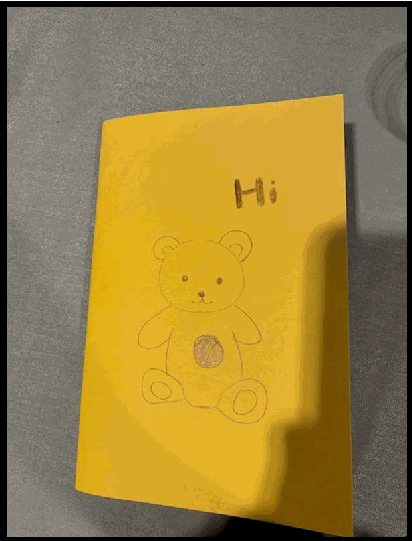
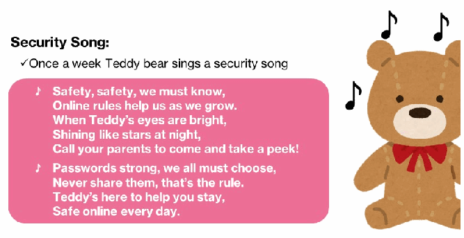
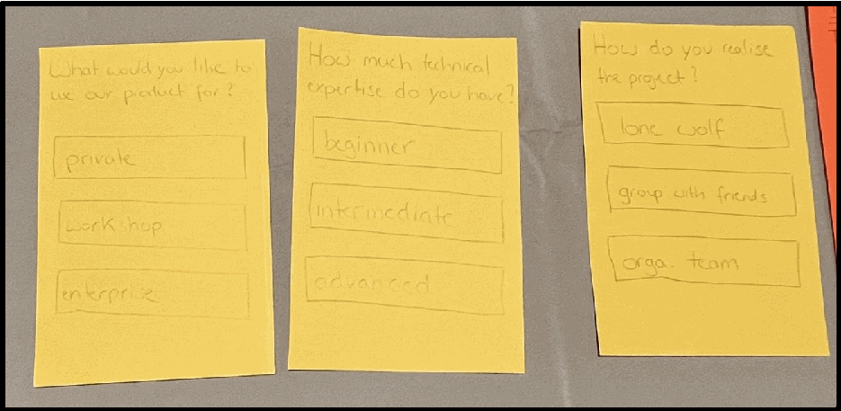

NIST IR 8558 日本語訳
英語タイトル : Report on the Design-A-Thon: Designing Effective and Accessible Approaches for Digital Product Cybersecurity Education and Awareness日本語タイトル : Design-A-Thon に関する報告書：デジタル製品のサイバーセキュリティ教育と啓発に向けた、効果的でアクセスしやすいアプローチの設計
公開日 : 2025-09-03
原文URL : https://csrc.nist.gov/pubs/ir/8558/final
翻訳編集 : 自動生成（有志による非公式の日本語訳）, 原文取得日 : 2026-10-31, 訳文 : 178 / 199 ブロック
[要約] NIST IR 8558 は、2024 年 8 月 11 日に開催された初の SOUPS Design-A-Thon を記録した報告書です。このイベントは、デジタル製品のサイバーセキュリティ教育と啓発に向けた、効果的でアクセスしやすいアプローチの設計に焦点を当て、合計 8 人が参加して 3 つのチームを作りました。各チームは、NIST チームが作成した 5 つの製品データカード（Product Data Cards）の中から模擬製品を選び、その情報を使って、その製品のサイバーセキュリティ教育と啓発の戦略を策定しました。チームは、斬新な手法と確かなベストプラクティスを活用した戦略の計画に成功し、NIST チームは、参加チームの設計から注目点と要点を特定しました。
NIST Internal Report
NIST 内部報告書
NIST IR 8558
NIST IR 8558
Report on the Design-A-Thon: Designing Effective and Accessible Approaches for Digital Product Cybersecurity Education and Awareness
Design-A-Thon に関する報告書：デジタル製品のサイバーセキュリティ教育と啓発に向けた、効果的でアクセスしやすいアプローチの設計
Michael Fagan Julie Haney Daniel Eliot Barbara Cuthill Kristina Rigopoulos
Michael Fagan Julie Haney Daniel Eliot Barbara Cuthill Kristina Rigopoulos
This publication is available free of charge from: https://doi.org/10.6028/NIST.IR.8558
本刊行物は次のURLから無償で入手できます：https://doi.org/10.6028/NIST.IR.8558
NIST Internal Report
NIST 内部報告書
NIST IR 8558
NIST IR 8558
Report on the Design-A-Thon: Designing Effective and Accessible Approaches for Digital Product Cybersecurity Education and Awareness
Design-A-Thon に関する報告書：デジタル製品のサイバーセキュリティ教育と啓発に向けた、効果的でアクセスしやすいアプローチの設計
Michael Fagan Daniel Eliot Barbara Cuthill Kristina Rigopoulos
Michael Fagan Daniel Eliot Barbara Cuthill Kristina Rigopoulos
Applied Cybersecurity Division Information Technology Laboratory
Applied Cybersecurity Division Information Technology Laboratory
Julie Haney
Julie Haney
Information Access Division Information Technology Laboratory
Information Access Division Information Technology Laboratory
This publication is available free of charge from: https://doi.org/10.6028/NIST.IR.8558
本刊行物は次のURLから無償で入手できます：https://doi.org/10.6028/NIST.IR.8558
September 2025
2025年9月
［米国商務省の紋章。公的な標章のため、この非公式サイトには掲載していません。原本 PDF を参照してください。］
U.S. Department of Commerce Howard Lutnick, Secretary
U.S. Department of Commerce Howard Lutnick, Secretary
National Institute of Standards and Technology
National Institute of Standards and Technology
Craig Burkhardt, Acting Under Secretary of Commerce for Standards and Technology and Acting NIST Director
Craig Burkhardt, Acting Under Secretary of Commerce for Standards and Technology and Acting NIST Director
Certain equipment, instruments, software, or materials, commercial or non-commercial, are identified in this paper in order to specify the experimental procedure adequately. Such identification does not imply recommendation or endorsement of any product or service by NIST, nor does it imply that the materials or equipment identified are necessarily the best available for the purpose.
本稿では、実験手順を適切に特定するために、商用・非商用を問わず特定の機器、計器、ソフトウェア、または材料を挙げています。このような特定は、NIST がいかなる製品やサービスも推奨または支持していることを意味するものではなく、挙げた材料や機器がその目的に最適であるとは限らないことを意味するものでもありません。
There may be references in this publication to other publications currently under development by NIST in accordance with its assigned statutory responsibilities. The information in this publication, including concepts and methodologies, may be used by federal agencies even before the completion of such companion publications. Thus, until each publication is completed, current requirements, guidelines, and procedures, where they exist, remain operative. For planning and transition purposes, federal agencies may wish to closely follow the development of these new publications by NIST.
本刊行物には、NIST が法令で定められた責務に従って現在作成中の他の刊行物への言及が含まれる場合があります。概念や方法論を含む本刊行物の情報は、そうした関連刊行物の完成前であっても、連邦政府機関が使用できます。したがって、各刊行物が完成するまでは、現行の要求事項、ガイドライン、手順が存在する場合には、それらが引き続き有効です。計画と移行のために、連邦政府機関は、NIST によるこれらの新しい刊行物の作成状況を注意深く追ってもよいです。
Organizations are encouraged to review all draft publications during public comment periods and provide feedback to NIST. Many NIST cybersecurity publications, other than the ones noted above, are available at https://csrc.nist.gov/publications.
組織は、パブリックコメント期間中にすべての草案を確認し、NIST にフィードバックを提供することが推奨されています。上記以外の NIST のサイバーセキュリティ関連刊行物の多くは、https://csrc.nist.gov/publications で入手できます。
NIST Technical Series Policies Copyright, Use, and Licensing Statements NIST Technical Series Publication Identifier Syntax
NIST Technical Series の方針、著作権・使用・ライセンスに関する声明、NIST Technical Series 刊行物識別子の構文
Publication History Approved by the NIST Editorial Review Board on 2025-07-21
刊行履歴 2025-07-21 に NIST Editorial Review Board が承認
How to Cite this NIST Technical Series Publication Fagan M, Haney J, Eliot D, Cuthill B, Rigopoulos K (2025) Report on the Design-A-Thon: Designing Effective and Accessible Approaches for Digital Product Cybersecurity Education and Awareness. (National Institute of Standards and Technology, Gaithersburg, MD), NIST Interagency or Internal Report (IR) NIST IR 8558. https://doi.org/10.6028/NIST.IR.8558
本 NIST Technical Series 刊行物の引用方法 Fagan M, Haney J, Eliot D, Cuthill B, Rigopoulos K (2025) Report on the Design-A-Thon: Designing Effective and Accessible Approaches for Digital Product Cybersecurity Education and Awareness. (National Institute of Standards and Technology, Gaithersburg, MD), NIST Interagency or Internal Report (IR) NIST IR 8558. https://doi.org/10.6028/NIST.IR.8558
Author ORCID iDs Michael Fagan: 0000-0002-1861-2609 Julie Haney: 0000-0002-6017-9693 Daniel Eliot: 0009-0006-3078-555X Barbara B. Cuthill: 0000-0002-2588-6165 Kristina Rigopoulos: 0000-0001-5223-8801
著者の ORCID iD Michael Fagan: 0000-0002-1861-2609 Julie Haney: 0000-0002-6017-9693 Daniel Eliot: 0009-0006-3078-555X Barbara B. Cuthill: 0000-0002-2588-6165 Kristina Rigopoulos: 0000-0001-5223-8801
Contact Information iotsecurity@nist.gov
連絡先 iotsecurity@nist.gov
National Institute of Standards and Technology Attn: Applied Cybersecurity Division, Information Technology Laboratory 100 Bureau Drive (Mail Stop 2000) Gaithersburg, MD 20899-2000
National Institute of Standards and Technology Attn: Applied Cybersecurity Division, Information Technology Laboratory 100 Bureau Drive (Mail Stop 2000) Gaithersburg, MD 20899-2000
Additional Information Additional information about this publication is available at https://csrc.nist.gov/pubs/ir/8558/final, including related content, potential updates, and document history.
追加情報 本刊行物に関する追加情報は https://csrc.nist.gov/pubs/ir/8558/final で入手できます。関連コンテンツ、更新の可能性、文書の履歴も掲載されています。
All comments are subject to release under the Freedom of Information Act (FOIA).
すべてのコメントは、情報自由法（FOIA）に基づいて公開される場合があります。
Abstract
概要
This report documents the first SOUPS Design-A-Thon, which was held on August 11th, 2024, and focused on Designing Effective and Accessible Approaches for Digital Product Cybersecurity Education and Awareness. In total, eight individuals participated in the event, forming three teams. The teams each selected a mock product based on a selection of five Product Data Cards developed by the NIST team. Participants used the information on the Product Data Cards to develop a strategy for cybersecurity education and awareness for the product. Teams were successful in planning strategies that utilize novel techniques and sound best practices. From the participant teams’ designs, the NIST team identified highlights and takeaways that are further elaborated in this report.
本報告書は、2024年8月11th日に開催された初の SOUPS Design-A-Thon を記録したものです。このイベントは、デジタル製品のサイバーセキュリティ教育と啓発に向けた、効果的でアクセスしやすいアプローチの設計に焦点を当てました。合計 8 人が参加し、3 つのチームを作りました。各チームは、NIST チームが作成した 5 つの製品データカード（Product Data Cards）の中から、模擬製品を選びました。参加者は製品データカードの情報を使って、その製品のサイバーセキュリティ教育と啓発の戦略を策定しました。チームは、斬新な手法と確かなベストプラクティスを活用した戦略の計画に成功しました。NIST チームは、参加チームの設計から、本報告書でさらに詳しく述べる注目点と要点を特定しました。
Keywords
キーワード
cybersecurity; Internet of Things; Design-A-Thon; usability; human factors; education and awareness.
サイバーセキュリティ；モノのインターネット；Design-A-Thon；ユーザビリティ；ヒューマンファクター；教育と啓発。
Audience
想定読者
This report is primarily intended for students and researchers in the fields of IoT cybersecurity and usable security. The topics and discussion of this report may also be useful and interesting to practitioners in these fields, but since the report contains initial findings from a small group exercise, it is not intended as a specific recommendation or guideline for practice.
本報告書は、主に IoT サイバーセキュリティと利用しやすいセキュリティ（usable security）の分野の学生と研究者を対象としています。本報告書のトピックと議論は、これらの分野の実務者にとっても有用で興味深いものとなる場合がありますが、小規模なグループ演習の初期の知見を含むため、本報告書は具体的な推奨事項やガイドラインとして意図されたものではありません。
Table of Contents
目次
List of Figures
図の一覧
Acknowledgments
謝辞
NIST thanks all the organizers of USENIX SOUPS and the Tutorials and Workshops Co-Chairs, specifically, for the opportunity to bring our idea for a Design-A-Thon to the symposium. We also thank everyone who participated in the Design-A-Thon, giving their time and bringing the great ideas documented in this report.
NIST は、Design-A-Thon の構想をシンポジウムに持ち込む機会をくださった USENIX SOUPS のすべての主催者、特に Tutorials and Workshops Co-Chairs に感謝します。また、Design-A-Thon に参加し、時間を割いて、本報告書に記録された優れたアイデアをもたらしてくださったすべての方々にも感謝します。
1. Introduction
1. はじめに
On August 11, 2024, National Institute of Standards and Technology (NIST) researchers facilitated a Design-A-Thon titled Designing Effective and Accessible Approaches for Digital Product Cybersecurity Education and Awareness which was hosted at the 2024 USENIX Symposium on Usable Privacy and Security (SOUPS). The Design-A-Thon was organized by Michael Fagan, Daniel Eliot, Barbara Cuthill, and Julie Haney with support from Kristina Rigopoulos, all members of the NIST Information Technology Lab (ITL). Background on the foundations for this project is provided in Section 2, while details about the planning and execution of the Design-A-Thon are discussed in Section 3.
2024年8月11日に、米国国立標準技術研究所（NIST）の研究者は、2024 USENIX Symposium on Usable Privacy and Security（SOUPS）で開催された、「デジタル製品のサイバーセキュリティ教育と啓発に向けた、効果的でアクセスしやすいアプローチの設計（Designing Effective and Accessible Approaches for Digital Product Cybersecurity Education and Awareness）」と題する Design-A-Thon を進行しました。この Design-A-Thon は、NIST 情報技術ラボラトリー（ITL）のメンバーである Michael Fagan、Daniel Eliot、Barbara Cuthill、Julie Haney が、Kristina Rigopoulos の支援を受けて企画しました。このプロジェクトの基盤に関する背景は第 2 章で示し、Design-A-Thon の計画と実施の詳細は第 3 章で論じます。
In total, eight conference attendees participated in the event, forming three teams. Each team selected a mock product based on a selection of five Product Data Cards developed by the NIST team. The Product Data Cards developed for the Design-A-Thon can be seen in Appendix B. Participants used the information on the Product Data Cards to develop a strategy for cybersecurity education and awareness for the product. The team’s designs and ideas are documented in Section 4.
合計 8 人の会議参加者がこのイベントに参加し、3 つのチームを作りました。各チームは、NIST チームが作成した 5 つの製品データカードの中から、模擬製品を選びました。Design-A-Thon のために作成した製品データカードは、付録 B で見ることができます。参加者は製品データカードの情報を使って、その製品のサイバーセキュリティ教育と啓発の戦略を策定しました。チームの設計とアイデアは、第 4 章に記録しています。
Teams were successful in planning strategies that utilize novel techniques and sound best practices. From the participant teams’ designs, the NIST team identified highlights and takeaways that are further elaborated in Section 5.
チームは、斬新な手法と確かなベストプラクティスを活用した戦略の計画に成功しました。NIST チームは、参加チームの設計から、第 5 章でさらに詳しく述べる注目点と要点を特定しました。
2. Background
2. 背景
2.1. Digital Product Cybersecurity Education and Awareness
2.1. デジタル製品のサイバーセキュリティ教育と啓発
The NIST Internet of Things (IoT) Cybersecurity Program has defined an IoT cybersecurity baseline for both technical capabilities and non-technical capabilities. Technical capabilities are those provided by digital products using software and hardware, such as Over-The-Air software update mechanisms or data encryption. Non-technical capabilities are those provided by organizations in support of digital product cybersecurity. Cybersecurity education and awareness is an example of a non-technical cybersecurity capability. The term “education and awareness” is defined as “The ability for the manufacturer and/or supporting entity to create awareness of and educate customers and others in the IoT device ecosystem about cybersecurity related information, considerations, features, etc. of the IoT device.” [1] There are many ways this capability can be implemented, but some examples include:
NIST の Internet of Things（IoT）Cybersecurity プログラムは、技術的な能力と非技術的な能力の両方について、IoT サイバーセキュリティのベースラインを定義しています。技術的な能力とは、無線（Over-The-Air）によるソフトウェア更新の仕組みやデータ暗号化など、デジタル製品がソフトウェアとハードウェアを用いて提供するものです。非技術的な能力とは、デジタル製品のサイバーセキュリティを支えるために組織が提供するものです。サイバーセキュリティ教育と啓発は、非技術的なサイバーセキュリティ能力の一例です。「教育と啓発」という用語は、「製造者または支援する事業体が、IoT デバイスのサイバーセキュリティに関連する情報、考慮事項、機能などについて、IoT デバイスのエコシステムにいる顧客やその他の人々に認識を促し、教育する能力」と定義されています [1]。この能力を実装する方法は多くありますが、いくつかの例を挙げます。
•Instructions in a printed user manual.
•印刷されたユーザーマニュアルに載せた手順。
•How-to and other instructional videos available online.
•オンラインで入手できる操作方法やその他の説明動画。
•In-person training sessions or remote webinars.
•対面の研修セッションまたはリモートのウェビナー。
•Information delivered via a product’s mobile application.
•製品のモバイルアプリケーションを通じて提供される情報。
Cybersecurity education and awareness can provide critical support for the cybersecurity of digital products. Notably, the capability can inform and educate users about other cybersecurity capabilities, particularly technical capabilities. For example, cybersecurity education and awareness can guide users on creating strong access control credentials and permissions for products where such features are supported. Other information can be delivered using this capability as well, such as expectations for use of the product and other cybersecurity expectations, which can reduce the possibility of a risk being missed or otherwise unaddressed when the product is deployed.
サイバーセキュリティ教育と啓発は、デジタル製品のサイバーセキュリティに対して重要な支えとなり得ます。特に、この能力は、他のサイバーセキュリティ能力、とりわけ技術的な能力について、利用者に知らせ、教育できます。たとえば、サイバーセキュリティ教育と啓発は、そのような機能が提供されている製品で、強力なアクセス制御の認証情報と権限を作成する方法を利用者に案内できます。製品の利用に関する期待や、その他のサイバーセキュリティ上の期待など、他の情報もこの能力を使って提供でき、製品の配備時にリスクが見落とされたり、対処されないままになったりする可能性を減らせます。
For more information about cybersecurity education and awareness, please see NIST Internal/Interagency Reports 8259 [2], 8259B [1], 8425 [3], 8425A [4], and NIST Special Publication 800-213A [5].
サイバーセキュリティ教育と啓発の詳細については、NIST Internal/Interagency Reports 8259 [2]、8259B [1]、8425 [3]、8425A [4]、および NIST Special Publication 800-213A [5] を参照してください。
2.2. Human-Factors Considerations for Cybersecurity
2.2. サイバーセキュリティにおけるヒューマンファクターの考慮事項
Particular care should be taken with the messaging and presentation of consumer education materials or users may not engage with or understand them. Users are more likely to read or interact with educational materials that are visually appealing or in alternative formats appropriate to the product (e.g., videos) [6]. Further, materials should be written in language that is understandable to a wide range of users, typically written at no more than an 8th grade reading level for adult users. Translations of education materials into common languages spoken across the customer base should be provided, as is the practice for US federal agencies [7]. Additionally, materials should meet accessibility1 standards and guidance (e.g., Americans with Disabilities Act (ADA) and Section 508 of the Rehabilitation Act of 1973) to support users with disabilities.
消費者向け教育資料のメッセージと提示方法には特に注意を払うべきです。そうでないと、利用者は資料に関心を持たなかったり、理解できなかったりするおそれがあります。利用者は、視覚的に魅力のある教育資料や、製品に適した代替形式（たとえば動画）の教育資料を読んだり、利用したりする可能性が高くなります [6]。さらに、資料は幅広い利用者が理解できる言葉で書くべきで、成人の利用者向けには通常、8 年生（中学 2 年相当）を超えない読解レベルで書きます。教育資料は、米国連邦政府機関の慣行 [7] と同様に、顧客層全体で話される一般的な言語に翻訳して提供すべきです。さらに、資料は、障害のある利用者を支援するために、アクセシビリティ1 の標準とガイダンス（たとえば、Americans with Disabilities Act（ADA）や Rehabilitation Act of 1973 の第 508 条）を満たすべきです。
Since many users may not fully understand cybersecurity risks to their IoT products, education materials should clearly communicate the relevance of product cybersecurity features (what the features do and why these are of importance) and what actions are expected of the users (e.g., changing settings or physically safeguarding the product). Instructions for setting cybersecurity preferences should be clear, simple, and achievable for those without cybersecurity expertise. To support diverse users with different cybersecurity and technical needs, skills, and interests, a layered approach for education materials may also be helpful; first present basic information, then provide links to more detail for those who need or want it.
多くの利用者は、自分の IoT 製品に対するサイバーセキュリティリスクを十分に理解していない可能性があるため、教育資料は、製品のサイバーセキュリティ機能の関連性（機能が何をするのか、なぜ重要なのか）と、利用者に期待される行動（たとえば、設定の変更や製品の物理的な保護）を明確に伝えるべきです。サイバーセキュリティの設定に関する手順は、サイバーセキュリティの専門知識を持たない人にとっても、明確で、簡単で、実行可能であるべきです。サイバーセキュリティや技術に関するニーズ、スキル、関心が異なる多様な利用者を支援するために、教育資料に階層的なアプローチをとることも有用な場合があります。まず基本的な情報を提示し、次に、必要とする人や望む人のために、詳細へのリンクを提供します。
3. Report from the Design-A-Thon
3. Design-A-Thon の報告
A “Design-A-Thon” is an interactive event where individuals or teams are given a design task to work on within a given timeframe (generally several consecutive hours). It is closely related to the concept and approach of a Hack-A-Thon but isn’t as focused on technical solutions or coding. As such, Design-A-Thons can be a useful tool to bring inter-disciplinary thinking with the aim of novel solutions to problems. NIST researchers planned the Design-A-Thon to target cybersecurity education and awareness for digital products. Education and awareness of cybersecurity draws on several disciplines, and the research like that published at SOUPS captures many of the insights and approaches that can help develop effective strategies for educating users and making them aware of cybersecurity related to the digital products they use. The aim of this event was to encourage outside-the-box thinking around this topic and leverage participants’ knowledge and expertise to develop ideas and strategies for informing users of the digital products about the areas important to product lifecycle cybersecurity.
「Design-A-Thon」は、個人またはチームに設計課題が与えられ、決められた時間（通常は数時間連続）の中で取り組む対話型のイベントです。Hack-A-Thon の概念とアプローチに近いものですが、技術的な解決策やコーディングにはそれほど焦点を当てません。そのため、Design-A-Thon は、問題に対する斬新な解決策を目指して、学際的な思考を取り入れる有用な手段となり得ます。NIST の研究者は、デジタル製品のサイバーセキュリティ教育と啓発を対象にして、この Design-A-Thon を計画しました。サイバーセキュリティの教育と啓発は複数の分野に基づいており、SOUPS で発表されたもののような研究は、利用者を教育し、利用するデジタル製品に関連するサイバーセキュリティについて利用者に認識してもらうための効果的な戦略を策定するのに役立つ多くの知見やアプローチを示しています。このイベントの目的は、このトピックについて枠にとらわれない思考を促し、参加者の知識と専門性を活用して、製品ライフサイクルのサイバーセキュリティにとって重要な領域をデジタル製品の利用者に知らせるためのアイデアと戦略を策定することでした。
3.1. Before the Event
3.1. イベント前
The event webpage was created to provide basic information to potential participants about the event (e.g., goals, objectives, agenda) in the weeks leading up to SOUPS. Additionally, a Call for Participants Flyer was also developed and used to provide additional information about the Design-A-Thon to interested individuals. The Call for Participants was distributed by the SOUPS organizers when promoting the program of workshops accepted to the conference, including the Design-A-Thon. The Call for Participants Flyer can be found in Appendix A of this report.
SOUPS に先立つ数週間、イベントの基本情報（たとえば、目標、目的、議事次第）を潜在的な参加者に提供するため、イベントのウェブページが作成されました。さらに、関心のある人々に Design-A-Thon に関する追加情報を提供するため、参加者募集のチラシ（Call for Participants Flyer）も作成して使用しました。参加者募集は、Design-A-Thon を含む、会議で採択されたワークショップのプログラムを宣伝する際に、SOUPS の主催者によって配布されました。参加者募集のチラシは、本報告書の付録 A に掲載しています。
The NIST team developed a series of Product Data Cards to support the Design-A-Thon. These cards served as the prompts for teams to design approaches for cybersecurity education and awareness related to the products described on the cards. Each of the Product Data Cards featured a mock IoT product and fictional information about the product, its development, and supported cybersecurity. Each card contained the following information:
NIST チームは、Design-A-Thon を支えるために、一連の製品データカード（Product Data Cards）を作成しました。これらのカードは、チームがカードに記載された製品に関するサイバーセキュリティ教育と啓発のアプローチを設計するための課題として機能しました。各製品データカードには、模擬の IoT 製品と、その製品、開発、サポートされるサイバーセキュリティに関する架空の情報が載っていました。各カードには次の情報が含まれていました。
1.Name of the product and its manufacturer.
1.製品の名称とその製造者。
2.The target market of the product, what components comprise the product (e.g., mobile app, backend), and where the product is acquired by customers.
2.製品のターゲット市場、製品を構成するコンポーネント（たとえば、モバイルアプリ、バックエンド）、顧客が製品を入手する場所。
3.The features of the product.
3.製品の機能。
4.Information about the product’s lifecycle and cybersecurity support throughout the lifecycle.
4.製品のライフサイクルと、ライフサイクル全体にわたるサイバーセキュリティのサポートに関する情報。
5.How data is protected and access is controlled.
5.データの保護方法とアクセスの制御方法。
6.How the product can be configured by customers and other users.
6.顧客やその他の利用者が製品を構成設定する方法。
7.How the manufacturer can communicate with customers and other users.
7.製造者が顧客やその他の利用者とコミュニケーションをとる方法。
Around these 7 topics, the NIST team created five unique Product Data Cards that teams could choose from as a focus of their designs. The NIST team varied products by multiple aspects such as functions, features, target market to provide distinct starting points for the teams and to explore how approaches to cybersecurity education and awareness may be similar or different for products and audiences. All Product Data Cards created for this event can be found in Appendix B.
NIST チームは、これら 7 つのトピックを軸に、チームが設計の焦点として選べる 5 つの固有の製品データカードを作成しました。NIST チームは、チームに明確な出発点を与え、サイバーセキュリティ教育と啓発のアプローチが製品や対象者によってどのように似たり異なったりするかを探るために、機能、特徴、ターゲット市場など、複数の側面に違いを持たせた製品を用意しました。このイベントのために作成したすべての製品データカードは、付録 B に掲載しています。
3.2. Event Logistics
3.2. イベントの運営
This event occurred at the Twentieth Symposium on Usable Privacy and Security held in Philadelphia, Pennsylvania, on Sunday, August 11, 2024. A total of eight participants attended the Design-A-Thon, forming three design teams. Team 1 had three team members, Team 2 had two team members, and Team 3 had three team members. Participants were all college or graduate student attendees of the SOUPS conference. Three NIST team members were present to coordinate and run the event. Design teams mainly worked independently, but the NIST team did provide an introductory presentation (the slides of this presentation are available in Appendix C). This event was organized as follows:
このイベントは、2024年8月11日（日曜日）にペンシルベニア州フィラデルフィアで開催された、第 20 回 Symposium on Usable Privacy and Security で行われました。合計 8 人の参加者が Design-A-Thon に出席し、3 つの設計チームを作りました。チーム 1 は 3 人、チーム 2 は 2 人、チーム 3 は 3 人でした。参加者は全員、SOUPS 会議に出席した大学生または大学院生でした。NIST チームのメンバー 3 人が、イベントの調整と運営のために出席しました。設計チームは主に独立して作業しましたが、NIST チームは紹介プレゼンテーションを行いました（このプレゼンテーションのスライドは付録 C にあります）。このイベントは次のように構成されました。
1.The NIST team gave a brief introduction that defined cybersecurity education and awareness and provided other background information for participants as well as instructions for the Design-A-Thon.
1.NIST チームは、サイバーセキュリティ教育と啓発を定義し、参加者にその他の背景情報と Design-A-Thon の手順を提供する、簡単な紹介を行いました。
2.Each design team selected their target product from the selection of Product Data Cards.
2.各設計チームは、製品データカードの中から、対象とする製品を選びました。
3.Design teams brainstormed ideas and discussed potential approaches before a brief check in with the NIST team after 30 minutes to ensure all teams were making progress.
3.設計チームは、アイデアを出し合い、潜在的なアプローチを議論したのち、30 分後に NIST チームと短い確認を行い、すべてのチームが進捗していることを確かめました。
4.Design teams developed and honed their ideas for about an hour before another brief check-in with the NIST team.
4.設計チームは、約 1 時間にわたってアイデアを発展させ磨いたのち、NIST チームと再度短い確認を行いました。
5.Design teams finalized their ideas in the last hour.
5.設計チームは、最後の 1 時間でアイデアを仕上げました。
6.Each design team presented their plan, including any examples and mock-ups.
6.各設計チームは、例やモックアップを含む計画を発表しました。
Throughout the event, NIST team members were available to answer questions from the teams and captured images, artifacts, and design progression notes. The following section details artifacts from the Design-A-Thon from each of the design teams.
イベントを通じて、NIST チームのメンバーはチームからの質問に答えられる状態にあり、画像、成果物、設計の進行メモを取得しました。次章では、各設計チームの Design-A-Thon での成果物を詳しく示します。
4. Designs
4. 設計
This section describes each design team’s plan, as well as images, and other artifacts from the Design-A-Thon.
本章では、各設計チームの計画と、Design-A-Thon の画像やその他の成果物を説明します。
4.1. Team 1
4.1. チーム 1
Team 1 selected the IoT Children’s Toy as their product. The team designed around accessibility for both parents and children. For example, they included a storybook-style manual and music-based educational approaches for children. Figure 1 shows the mock-up the team created for the cover of the storybook manual for children.
チーム 1 は、製品として IoT 子ども向けおもちゃ（IoT Children’s Toy）を選びました。チームは、親と子どもの両方にとってのアクセシビリティを軸に設計しました。たとえば、子ども向けに絵本形式のマニュアルと音楽に基づく教育アプローチを含めました。図 1 は、チームが作成した、子ども向け絵本形式マニュアルの表紙のモックアップを示しています。

灰色の机に置かれた、手描きの黄色い冊子の表紙の写真です。表紙には手書きの「Hi」の文字と、おなかに丸い模様のある座ったテディベアの鉛筆画が描かれています。
Fig. 1. Hand-drawn concept of the storybook manual for children.
図 1. 子ども向け絵本形式マニュアルの手描きの構想。
The team identified that firmware updates are critical to the cybersecurity of a smart teddy bear. Team participants also noted that privacy was also noted as a critical concern. The team envisioned utilizing videos and physical manuals to communicate with customers and users. They developed two manuals: one for parents and another for children, allowing for a more targeted audience approach. The adult manual was detailed and focused on salient tips and direct, easy access to resources. The child manual was designed around the idea that the child could help drive cybersecurity and that the product could help teach good cyber hygiene. For example, the eyes of the bear can glow red when an update is needed, prompting the child to seek help, as the team describes in their mock-up of the story book in Fig. 2.
チームは、ファームウェア更新がスマートなテディベアのサイバーセキュリティにとって重要であると認識しました。チームの参加者は、プライバシーも重要な懸念事項であると指摘しました。チームは、顧客や利用者とのコミュニケーションに動画と紙のマニュアルを活用することを構想しました。親向けと子ども向けの 2 つのマニュアルを作成し、対象をより絞ったアプローチを可能にしました。大人向けのマニュアルは詳細で、重要なヒントとリソースへの直接的で簡単なアクセスに焦点を当てていました。子ども向けのマニュアルは、子どもがサイバーセキュリティを推進する助けとなり、製品が良好なサイバーハイジーンを教える助けとなるという考えを軸に設計されました。たとえば、更新が必要なときにクマの目が赤く光り、子どもが助けを求めるよう促すことを、チームは図 2 の絵本のモックアップで説明しています。
![Four illustrated storybook pages in a two-by-two grid, each with a cartoon teddy bear. Top left: “My name is Teddy! Let’s learn together and have fun!” Top right: “We will sing and dance together!” with music notes. Bottom left: “I’ll be there to remind you to brush your teeth!” with the bear holding a toothbrush. Bottom right: “I will also keep you safe, but I need your help! Okay? When my eyes look shiny like stars, I need you to please call your parents to visit me.” with the bear’s eyes drawn as stars.](assets/ir-8558/p0013-figure-01.png)
漫画風のテディベアを描いた絵本のページ4枚を2行2列に並べた図です。左上:「My name is Teddy! Let’s learn together and have fun!」（ぼくの名前はテディ！ いっしょに楽しく学ぼう！）。右上:「We will sing and dance together!」（いっしょに歌っておどろう！）と音符。左下:「I’ll be there to remind you to brush your teeth!」（歯みがきの時間を教えてあげるよ！）と歯ブラシを持つクマ。右下:「I will also keep you safe, but I need your help! Okay? When my eyes look shiny like stars, I need you to please call your parents to visit me.」（きみを守るけど、きみの助けが必要なんだ！ いい？ ぼくの目が星のように光ったら、おうちの人を呼んできてね。）と、目が星になったクマ。
Fig. 2. Sample pages for the storybook manual for children.
図 2. 子ども向け絵本形式マニュアルのサンプルページ。
The team also pitched a song that the bear could sing that is about and aimed to create cybersecurity awareness. Figure 3 below shows the draft song the team developed.
チームはまた、サイバーセキュリティの啓発を目的とした歌をクマが歌う案も提案しました。下の図 3 は、チームが作成した歌の草稿を示しています。

「Security Song:」（セキュリティの歌）と題したピンクの枠に「✓Once a week Teddy bear sings a security song」（週に1回、テディベアがセキュリティの歌を歌う）と添え書きがあり、横に赤いリボンのテディベアと音符が描かれています。1番:「Safety, safety, we must know, Online rules help us as we grow. When Teddy’s eyes are bright, Shining like stars at night, Call your parents to come and take a peek!」（安全、安全、知っておこう。オンラインのルールが成長を助けてくれる。テディの目が夜の星のように光ったら、おうちの人を呼んで見てもらおう！）。2番:「Passwords strong, we all must choose, Never share them, that’s the rule. Teddy’s here to help you stay, Safe online every day.」（強いパスワードを選ぼう。人に教えない、それがルール。テディがいつも、オンラインで安全にいられるよう手伝うよ。）
Fig. 3. Cybersecurity-related song created for the toy’s cybersecurity education and awareness plan.
図 3. おもちゃのサイバーセキュリティ教育・啓発計画のために作られたサイバーセキュリティ関連の歌。
4.2. Team 2
4.2. チーム 2
Team 2 selected the IoT Security System as their product. They developed an app-based approach that allowed for directed information accessibility for users. The app for the product was identified as the primary portal for cybersecurity education and awareness. In the team’s words:
チーム 2 は、製品として IoT セキュリティシステム（IoT Security System）を選びました。チームは、利用者が必要な情報に的確にアクセスできるアプリベースのアプローチを開発しました。製品のアプリは、サイバーセキュリティ教育と啓発の主要な入り口として位置づけられました。チームの言葉では次のとおりです。
“The SafeCo app should offer an intuitive, easy-to-navigate interface that makes managing your home security simple. It includes a chat system for real-time cybersecurity support, along with quick access to digital manuals and our website for additional resources. Should have a customizable dashboard to stay updated with instant notifications to keep your systems secure.”
「SafeCo アプリは、ホームセキュリティの管理を簡単にする、直感的で操作しやすいインターフェースを提供すべきです。リアルタイムのサイバーセキュリティサポート用のチャットシステムに加え、デジタルマニュアルや追加リソースのウェブサイトにすばやくアクセスできます。システムを安全に保つための即時通知で最新状態を維持できる、カスタマイズ可能なダッシュボードを備えるべきです。」
［人物の写真。人物が写っているため、この非公式サイトには掲載していません。原本 PDF を参照してください。］
Fig. 4. Mock-up of how cybersecurity education and awareness information could be delivered via the app.
図 4. アプリを通じてサイバーセキュリティ教育・啓発情報を提供する方法のモックアップ。
The team also proposed a digital manual that is sent upon registration. This would include a quick start manual, a single sheet of key information that presents a series of quick start lessons. Links to more information and deeper materials would also be included. Figure 5 shows the team’s mock-up for the quick start manual.
チームはまた、登録時に送信されるデジタルマニュアルを提案しました。これには、一連の簡単な導入レッスンをまとめた、重要な情報の1枚もののクイックスタートマニュアルが含まれます。詳細情報やより詳しい資料へのリンクも含まれます。図 5 は、クイックスタートマニュアルについてのチームのモックアップを示しています。
![Mock-up of a one-page “Quickstart Guide” (header text reallygreatsite.com) with five numbered sections. 01 SafeCo System Introduction: “Start here if you have just purchased SafeCo and are a new member. Here we provide a quick introduction on SafeCo and how SafeCo helps secure your home.” 02 SafeCo Setup and Usage: “Learn how to set up your Safeco Home Security System and connect your system to your mobile application. We also walk you through how SafeCo can be setup specifically to secure your home or business.” 03 Important Features: “Once you have setup SafeCo, we explain important features you will need to understand to secure your system. These include features both with your SafeCo physical devices and mobile application.” 04 Your Data Security: “Come to this section to learn how SafeCo securely stores your data. We also explain here how you can access your data and what are recommended practices you should do to secure your data.” 05 Technical Support: “For any technical questions or general concerns or issues, we provide multiple forms of communication here for support. We also provide a chatbot through both our mobile application and website if you have specific questions.”](assets/ir-8558/p0015-figure-01.png)
5つの番号付きセクションからなる1ページの「Quickstart Guide」（クイックスタートガイド）の試作（ヘッダーには reallygreatsite.com と記載）。01 SafeCo System Introduction（SafeCoシステムの紹介）: SafeCoを購入したばかりの新規メンバーはここから始めます。ここではSafeCoの概要と、SafeCoがどのように家を安全に保つのかを簡単に紹介します。02 SafeCo Setup and Usage（SafeCoの設定と使い方）: Safeco Home Security Systemの設定方法と、システムをモバイルアプリケーションに接続する方法を説明します。また、家や事業所を安全に保つため、SafeCoをどのように設定できるかを順に説明します。03 Important Features（重要な機能）: SafeCoの設定後、システムを安全に保つために理解しておく必要のある重要な機能を説明します。これには、SafeCoの物理デバイスとモバイルアプリケーションの両方の機能が含まれます。04 Your Data Security（データのセキュリティ）: SafeCoがデータを安全に保存する方法を学ぶには、このセクションをご覧ください。また、データへのアクセス方法と、データを安全に保つために推奨される実践方法も説明します。05 Technical Support（技術サポート）: 技術的な質問、一般的な懸念、問題については、複数の連絡手段でサポートを提供します。特定の質問がある場合は、モバイルアプリケーションとウェブサイトの両方でチャットボットも利用できます。
Fig. 5. Example of the quick start manual proposed to support the product.
図 5. 製品を支えるために提案されたクイックスタートマニュアルの例。
The team also proposed a regular newsletter emailed to proactively engage users that will contain information about cybersecurity. User reports of issues and questions can be used to develop content for the newsletters. The newsletters will contain links to “beginner style” information for system set up and usage. A sample newsletter created by the team is shown in Fig. 6.
チームはまた、サイバーセキュリティに関する情報を含む定期ニュースレターをメールで送信し、利用者に先回りして働きかけることを提案しました。利用者から寄せられた問題の報告や質問を、ニュースレターの内容作成に活用できます。ニュースレターには、システムの設定と使い方に関する「初心者向け」の情報へのリンクが含まれます。チームが作成したニュースレターのサンプルを図 6 に示します。
［人物の写真。人物が写っているため、この非公式サイトには掲載していません。原本 PDF を参照してください。］
Fig. 6. An example of a cybersecurity-targeted newsletter proposed by the team.
図 6. チームが提案したサイバーセキュリティ向けニュースレターの例。
4.3. Team 3
4.3. チーム 3
Team 3 selected the IoT Security System as their product. They developed a tailored and gamified approach to delivering cybersecurity education and awareness information. Figure 7 highlights the product's expected users, dimensions, goals, and challenges the team envisioned related to cybersecurity education and awareness for the product. They pointed out two key dimensions to their plan: the various technical skill levels customers may have and how some instances of the product will be managed by “sole operators” while others may be managed by “distributed teams.”
チーム 3 は、製品として IoT Security System を選びました。チームは、サイバーセキュリティ教育と啓発の情報を届けるための、個別に合わせたゲーム化アプローチを開発しました。図 7 は、製品のサイバーセキュリティ教育と啓発に関してチームが構想した、製品の想定利用者、次元、目標、課題を示しています。チームは計画の二つの重要な次元を指摘しました。顧客が持ち得るさまざまな技術スキルのレベルと、製品の導入事例によっては「単独の運用者」が管理し、別の事例では「分散チーム」が管理する場合があることです。
![Photograph of handwritten planning notes on a yellow sheet. Under the heading “USERS” are three drawings with labels: a house (“private user”), a small building (“small business”) and a large building (“enterprise”). Below: “Dimension 1: expertise novice ⟷ experts”; “Dimension 2: social embeddedness sole operator ⟷ distributed teams”; “Goals: set up and maintain home security system”; “Challenge: How to embed SafeCo into existing infrastructure? Threat modelling? Defenses?” (the left edge of “Challenge” is cut off in the photograph).](assets/ir-8558/p0017-figure-02.png)
黄色い紙に手書きした計画メモの写真です。「USERS」（利用者）の見出しの下に、家（「private user」個人利用者）、小さな建物（「small business」小規模事業者）、大きな建物（「enterprise」大企業）の3つの絵があります。その下に「Dimension 1: expertise（次元1: 専門性） novice ⟷ experts（初心者〜専門家）」、「Dimension 2: social embeddedness（次元2: 社会的な関わり） sole operator ⟷ distributed teams（単独の運用者〜分散したチーム）」、「Goals: set up and maintain home security system（目標: ホームセキュリティシステムの設定と保守）」、「Challenge: How to embed SafeCo into existing infrastructure? Threat modelling? Defenses?（課題: SafeCo を既存の基盤にどう組み込むか？ 脅威モデリングは？ 防御は？）」と書かれています（写真では「Challenge」の左端が切れています）。
Fig. 7. Planning notes for Team 3’s cybersecurity education and awareness strategy.
図 7. チーム 3 のサイバーセキュリティ教育・啓発戦略の計画メモ。
Based on their two identified key dimensions, the team focused on understanding prospective customers and how they may understand cybersecurity. Figure 8 shows a specific expected user narrative that the team used to target their designs and understand the challenge of different users.
特定した二つの重要な次元に基づき、チームは、見込み顧客を理解することと、顧客がサイバーセキュリティをどのように理解し得るかに焦点を当てました。図 8 は、チームが設計の対象を絞り、異なる利用者の課題を理解するために使用した、想定される具体的な利用者の物語を示しています。
［人物の写真。人物が写っているため、この非公式サイトには掲載していません。原本 PDF を参照してください。］
Fig. 8. A detailed user narrative was developed to hone cybersecurity education and awareness approaches. (Note: cropping of text is due to framing of the source image)
図 8. サイバーセキュリティ教育・啓発のアプローチを磨くために作成された、詳細なユーザーの物語。（注：テキストが切れているのは、元画像のフレーミングによるものです）
The planning and narratives culminated in a strategy for cybersecurity education and awareness. The team compartmentalized the key information they hoped to communicate to allow it to be divided and delivered to different users appropriately. They also incorporated guiding and gamification elements to encourage users to engage with and pursue the information. Fig. 9 and Fig. 10 depicts the team’s high-level implementation plan.
計画と物語は、サイバーセキュリティ教育と啓発の戦略に結実しました。チームは、伝えたい重要な情報を区分けし、異なる利用者に適切な形で届けられるようにしました。また、利用者が情報に関与し、さらに情報を追いかけるよう促すため、案内やゲーム化の要素も取り入れました。図 9 と図 10 は、チームの大まかな実施計画を示しています。

質問と回答欄を手書きした黄色いカード3枚を並べた写真です。カード1:「What would you like to use our product for?」（製品を何に使いたいですか？）― private（個人）、workshop（作業場）、enterprise（企業）。カード2:「How much technical expertise do you have?」（技術的な専門知識はどの程度ありますか？）― beginner（初級）、intermediate（中級）、advanced（上級）。カード3:「How do you realise the project?」（プロジェクトをどのように実現しますか？）― lone wolf（一人で）、group with friends（友人とのグループで）、orga. team（組織チーム）。
Fig. 9. The team’s mock-up of a guided and gamified approach that could be used to support cybersecurity education and awareness.
図 9. サイバーセキュリティ教育・啓発を支えるために使える、ガイド付きでゲーム化されたアプローチのチームによるモックアップ。
The three panels in Fig. 9 capture the ideas the team had for a guided approach to delivering cybersecurity education and awareness information based on how the product will be used and by whom. The first panel in the figure asks in what environment the product will be used: personal, workshop, or enterprise. The second panel asks the owner to rate their technical expertise as either beginner, intermediate, or advanced. Finally, the last panel asks whether the product will be used: only by the customer, by them with others, or by multiple users independently. The team proposed that responses to these and similar questions could help guide the customers and other users to the information most pertinent to them.
図 9 の3つのパネルは、製品をどのように、誰が使うかに基づいて、サイバーセキュリティ教育と啓発の情報を案内付きで届けるためのチームのアイデアを示しています。最初のパネルは、製品がどの環境で使われるか（個人、作業場、企業）を尋ねます。2番目のパネルは、所有者に自分の技術的専門性を初級、中級、上級のいずれかで評価するよう求めます。最後のパネルは、製品を顧客だけが使うのか、顧客が他者と使うのか、それとも複数の利用者がそれぞれ独立して使うのかを尋ねます。チームは、これらや同様の質問への回答が、顧客や他の利用者を、それぞれに最も関係する情報へ導く助けになると提案しました。
![Photograph of two overlapping handwritten sheets. A blue sheet, “Manual B”, has tags “enterprise”, “experts” and “distributed team”. An orange sheet in front, “Manual A”, has tags “private user”, “small business”, “beginner friendly” and “Lone wolves”, followed by colored level bars. Level 1 (green): “Placement” – a camera drawn with a check mark beside the note “Install cameras at a height where they cannot be easily tampered with.”, and a lower camera marked with a cross. Level 2 (yellow): “Privacy Zones” – a camera and a car with a check mark beside the note “Configure privacy zones to block out areas where recording is not needed or allowed.”, and a camera pointed at a window marked with a cross. Level 3 (red) has no content below it.](assets/ir-8558/p0019-figure-01.png)
手書きの紙2枚を重ねた写真です。後ろの青い紙「Manual B」（マニュアル B）には「enterprise」（企業）、「experts」（専門家）、「distributed team」（分散したチーム）のタグがあります。手前のオレンジの紙「Manual A」（マニュアル A）には「private user」（個人利用者）、「small business」（小規模事業者）、「beginner friendly」（初心者向け）、「Lone wolves」（単独で使う人）のタグがあり、その下に色分けしたレベルの帯があります。Level 1（緑）:「Placement」（設置）― チェック印のカメラの絵と「Install cameras at a height where they cannot be easily tampered with.」（簡単にいじられない高さにカメラを設置する）のメモ、低い位置のカメラには×印。Level 2（黄）:「Privacy Zones」（プライバシーゾーン）― カメラと車の絵にチェック印と「Configure privacy zones to block out areas where recording is not needed or allowed.」（録画が不要または許されない範囲を遮るようにプライバシーゾーンを設定する）のメモ、窓に向けたカメラには×印。Level 3（赤）の下には内容がありません。
Fig. 10. Mock-up of how answers to the guided questions will impact what customers see and how the content will be gamified.
図 10. ガイド付きの質問への回答が、顧客に表示される内容とコンテンツのゲーム化にどう影響するかを示すモックアップ。
The team envisioned that the information about customers and users could also be used to tailor the information delivered to customers and how it is gamified, as depicted in Fig. 10. In this context, gamification would be mechanisms that encourage individuals to continue to engage with the content through elements and approaches borrowed from games, such as competition between individuals, feedback on progress, and reward systems for progress. For example, for the IoT security system product, the team proposed organizing cybersecurity education and awareness information into levels, with the lowest level having the most accessible content and higher levels having more information of potentially increasing complexity. Customers and users would be introduced to the lowest level appropriate for them and encouraged to progress to higher levels, thus “leveling up” as in a game.
チームは、図 10 に示すように、顧客と利用者に関する情報を、顧客に届ける情報とそのゲーム化の方法を個別に合わせるためにも使えると構想しました。この文脈でのゲーミフィケーションとは、個人間の競争、進捗に対するフィードバック、進捗に対する報酬システムなど、ゲームから借用した要素やアプローチによって、個人がコンテンツに関与し続けるよう促す仕組みです。たとえば IoT セキュリティシステム製品について、チームは、サイバーセキュリティ教育と啓発の情報をレベルに整理することを提案しました。最も低いレベルが最もアクセスしやすい内容で、より高いレベルには、複雑さが増す可能性のあるより多くの情報があります。顧客や利用者は、自分に適した最も低いレベルから始め、より高いレベルに進むよう促され、ゲームのように「レベルアップ」します。
5. Discussion
5. 考察
This section presents observations and takeaways from the event and teams’ designs that were generated after the event and can inform future research and standardization efforts.
本章では、イベントとチームの設計から、イベント後に生まれた、今後の研究や標準化の取り組みに情報を提供し得る所見と要点を示します。
All three teams identified different approaches in their plans, showing the wide range of tools and concepts that can be used for cybersecurity education and awareness for IoT products. As teams discussed and identified their plans, they found that standardization of available approaches and selection of appropriate approaches could help increase the speed of material development. All teams deeply considered the expected customers of each product to ensure awareness and education approaches were adequately tailored. Teams indicated that any standardization effort should similarly be human-centric and consider the spectrum of potential users of a given application or product. Unlike some areas of cybersecurity (e.g., encryption) which require limited human interaction, particularly with users, education and awareness addresses the human-in-the-loop and so depends, in large part, on human-factors for efficacy.
3つのチームはいずれも計画で異なるアプローチを特定し、IoT製品のサイバーセキュリティ教育と啓発に使えるツールや概念の幅広さを示しました。チームは計画を議論して特定する中で、利用可能なアプローチを標準化し、適切なアプローチを選ぶことが、資料作成を速める助けになると分かりました。すべてのチームは、教育と啓発のアプローチが適切に調整されるよう、各製品の想定顧客を深く検討しました。チームは、標準化の取り組みも人間中心とし、特定のアプリケーションや製品の潜在利用者の幅を考慮すべきだと指摘しました。暗号化など、人間、特に利用者とのやり取りが限られるサイバーセキュリティ分野とは異なり、教育と啓発は人間が関与するプロセスを扱うため、その有効性は大部分がヒューマンファクターに依存します。
All three teams specifically considered how their designs could be “easiest” for users to use, understand, and be most accessible. Teams 1 and 3 incorporated gamification and other interactive elements to encourage users to pursue cybersecurity topics. For example, Team 3 attempted to gamify the pursuit of cybersecurity knowledge relative to the product by building out “levels” of concepts that build upon each other so that users could “level up” at their pace. Understanding and encouraging cybersecurity engagement has been a focus of research for the SOUPS community [8][9][10][11][12][13], and so the teams brought the insights from that research to the practical tasks of the Design-A-Thon.
3つのチームはいずれも、利用者にとって最も使いやすく、理解しやすく、利用しやすい設計にする方法を特に考慮しました。チーム 1 とチーム 3 は、利用者がサイバーセキュリティのトピックをさらに追究するよう促すため、ゲーム化やその他の対話的要素を取り入れました。たとえばチーム 3 は、利用者が自分のペースで「レベルアップ」できるよう、相互に積み重なる概念の「レベル」を構築し、製品に関連するサイバーセキュリティ知識の習得をゲーム化しようとしました。サイバーセキュリティへの関与を理解し促すことは、SOUPSコミュニティの研究の焦点であり [8][9][10][11][12][13]、チームはその研究の知見を Design-A-Thon の実践的な課題に持ち込みました。
The contextual nature of cybersecurity education and awareness approaches was apparent when two teams (i.e., Teams 2 and 3) selected the same product but developed different approaches and focused on different aspects of the design. Teams 2 and 3 homed in on different information that may be useful at different times during the product’s lifecycle. In one case, Team 2 focused on ensuring information was at users’ fingertips, particularly when support was needed. In the other case, Team 3 considered how individuals could be encouraged to engage on cybersecurity education and awareness outside of times they needed support, landing on gamification elements. Research shows that gamification of cybersecurity education and awareness can drive engagement for individuals around the subject [14], but for IoT products, gamification elements should not get in the way when users need support or specific information. In general, the divergence in focus between Teams 2 and 3 highlights the breadth of considerations to be made in designing these solutions, which can be a challenge for manufacturers and others to address when developing a product.
サイバーセキュリティ教育と啓発のアプローチが文脈に依存することは、2つのチーム（チーム 2 とチーム 3）が同じ製品を選びながら、異なるアプローチを開発し、設計の異なる側面に焦点を当てたことから明らかになりました。チーム 2 とチーム 3 は、製品のライフサイクルの異なる時点で有用になり得る情報に、それぞれ注目しました。一方でチーム 2 は、特にサポートが必要なときに、利用者がすぐ情報を参照できるようにすることに焦点を当てました。他方でチーム 3 は、サポートを必要とする時以外にも個人がサイバーセキュリティ教育と啓発に関与するよう促す方法を検討し、ゲーム化要素を採用しました。研究によると、サイバーセキュリティ教育と啓発のゲーム化は、このテーマへの個人の関与を促す可能性があります [14]。ただし、IoT製品では、利用者がサポートや特定の情報を必要とする際、ゲーム化要素が妨げにならないようにすべきです。一般に、チーム 2 とチーム 3 の焦点の違いは、こうしたソリューションの設計で考慮すべき事項の幅広さを示しています。これは、製造者などが製品開発時に取り組むうえで課題となる場合があります。
Many roadblocks can exist for manufacturers and other developing approaches for cybersecurity education and awareness related to IoT products, such as not realizing the breadth of variables and aspects to consider, underestimating the time to consider and develop effective solutions, and not knowing or having the ability to implement the most effective solution for all cases. Marketing and other aspects of the product development lifecycle can impact what are the best or most applicable approaches for cybersecurity education and awareness. Products and manufacturers may have access to unique communication channels that can be useful for cybersecurity communication (e.g., a mobile application). Manufacturers may have a design language or customer interaction approach developed independently of the product, intended to be used by the entire organization that may impact the approach to cybersecurity education and awareness. There may be an opportunity for additional research and future standardization efforts that explore and document these considerations while also linking them with existing and novel approaches for IoT product cybersecurity education and awareness.
IoT 製品に関連するサイバーセキュリティ教育と啓発のアプローチを開発する製造者などには、多くの障害があり得ます。たとえば、考慮すべき変数や側面の幅広さに気づかないこと、効果的なソリューションを検討し開発する時間を過小評価すること、あらゆる場合に最も効果的なソリューションを知らない、または実装する能力がないことなどです。マーケティングや、製品開発ライフサイクルのその他の側面は、サイバーセキュリティ教育と啓発に最適な、あるいは最も適用可能なアプローチに影響を与え得ます。製品や製造者は、サイバーセキュリティに関するコミュニケーションに有用な独自のコミュニケーション経路（たとえば、モバイルアプリケーション）を利用できる場合があります。製造者が、製品とは独立して開発した、組織全体で使うことを意図したデザイン言語や顧客対応のアプローチを持っている場合があり、それがサイバーセキュリティ教育と啓発のアプローチに影響し得ます。これらの考慮事項を探り、文書化すると同時に、IoT 製品のサイバーセキュリティ教育と啓発に関する既存および新規のアプローチと結び付ける、追加の研究と今後の標準化の取り組みの機会があるかもしれません。
Cybersecurity for consumer products could be driven by the upcoming United States Cyber Trust Mark [15], the European Union’s Cyber Resilience Act [16], and existing labelling programs such as Singapore’s Cyber Security Agency’s Cybersecurity Labelling Scheme for IoT [17]. Cybersecurity education and awareness specific to products labelled by these programs and in general as more consumers see these labels may increase the need for future research and standardization that prioritize practical application of concepts and clear, direct guidance for the community.
消費者向け製品のサイバーセキュリティは、近く導入される United States Cyber Trust Mark [15]、欧州連合の Cyber Resilience Act [16]、およびシンガポールの Cyber Security Agency による既存のラベリングプログラム Cybersecurity Labelling Scheme for IoT [17] によって推進される可能性があります。これらのプログラムでラベル付けされた製品に固有のサイバーセキュリティ教育と啓発、また、こうしたラベルを目にする消費者が増えることに伴う一般的なサイバーセキュリティ教育と啓発は、概念の実践的な適用とコミュニティへの明確で直接的な指針を優先する今後の研究や標準化の必要性を高める可能性があります。
Our team’s primary goal with planning and executing the Design-A-Thon was to explore effective approaches to digital product cybersecurity education and awareness, but the team did have insights that did not fit into this core objective. First, the team observed that the Design-A-Thon proved a useful mechanism to engage the teams on human-centered cybersecurity concepts and may be helpful for a variety of age groups with different educational backgrounds. For example, the Product Data Cards could be adapted for use in middle or high school settings and can be a tool to engage a variety of groups of students on cybersecurity topics (e.g., those interested in cybersecurity, graphic design, or education). A Design-A-Thon may also be useful as a component to a larger project inside and outside of the classroom setting. For example, teams could develop an original product idea over the course of a semester, seeing its design through to the point of devising the cybersecurity education and awareness approaches as our teams did at this event. Since these topics were not the focus of our team’s effort, future work could explore these educational possibilities and support educators in their use of Design-A-Thons and similar approaches to teach the next generation of cybersecurity workers.
Design-A-Thon を計画し実施する私たちのチームの主な目標は、デジタル製品のサイバーセキュリティ教育と啓発に効果的なアプローチを探ることでしたが、チームにはこの中核的な目的に当てはまらない知見もありました。第一に、チームは、Design-A-Thon が人間中心のサイバーセキュリティの概念にチームを関与させる有用な仕組みであること、また、教育背景の異なるさまざまな年齢層にも役立つ可能性があることを確認しました。たとえば、製品データカードは中学校や高校で使えるように調整でき、サイバーセキュリティのトピックについて、さまざまな学生グループ（サイバーセキュリティ、グラフィックデザイン、教育に関心のある学生など）の関心を引くツールになり得ます。Design-A-Thon は、教室の内外で行う、より大きなプロジェクトの一部としても役立つ可能性があります。たとえば、チームは1学期を通じて独自の製品アイデアを開発し、今回のイベントのチームが行ったように、サイバーセキュリティ教育と啓発のアプローチを考案する段階まで設計を進めることができます。これらのトピックは私たちのチームの取り組みの焦点ではなかったため、今後の作業では、こうした教育上の可能性を探り、次世代のサイバーセキュリティ人材を育成するために Design-A-Thon や類似のアプローチを使う教育者を支援できます。
References
参考文献
[1] Fagan M, Marron J, Brady KG, Jr, Cuthill BB, Megas KN, Herold R (2020) IoT Non-Technical Supporting Capability Core Baseline. (National Institute of Standards and Technology, Gaithersburg, MD), NIST Interagency or Internal Report (IR) NIST IR 8259B. https://doi.org/10.6028/NIST.IR.8259B
[1] Fagan M, Marron J, Brady KG, Jr, Cuthill BB, Megas KN, Herold R (2020) IoT Non-Technical Supporting Capability Core Baseline. (National Institute of Standards and Technology, Gaithersburg, MD), NIST Interagency or Internal Report (IR) NIST IR 8259B. https://doi.org/10.6028/NIST.IR.8259B
[2] Fagan M, Megas KN, Scarfone K, Smith M (2020) Foundational Cybersecurity Activities for IoT Device Manufacturers. (National Institute of Standards and Technology, Gaithersburg, MD), NIST Interagency or Internal Report (IR) 8259. https://doi.org/10.6028/NIST.IR.8259
[2] Fagan M, Megas KN, Scarfone K, Smith M (2020) Foundational Cybersecurity Activities for IoT Device Manufacturers. (National Institute of Standards and Technology, Gaithersburg, MD), NIST Interagency or Internal Report (IR) 8259. https://doi.org/10.6028/NIST.IR.8259
[3] Fagan M, Megas KN, Watrobski P, Marron J, Cuthill B (2022) Profile of the IoT Core Baseline for Consumer IoT Products. (National Institute of Standards and Technology, Gaithersburg, MD), NIST Interagency or Internal Report (IR) NIST IR 8425. https://doi.org/10.6028/NIST.IR.8425
[3] Fagan M, Megas KN, Watrobski P, Marron J, Cuthill B (2022) Profile of the IoT Core Baseline for Consumer IoT Products. (National Institute of Standards and Technology, Gaithersburg, MD), NIST Interagency or Internal Report (IR) NIST IR 8425. https://doi.org/10.6028/NIST.IR.8425
[4] Fagan M, Megas KN, Watrobski P, Marron J, Cuthill B, Lemire D, Hoehn B, Evans C (2024) Recommended Cybersecurity Requirements for Consumer-Grade Router Products. (National Institute of Standards and Technology, Gaithersburg, MD), NIST Interagency or Internal Report (IR) NIST IR 8425A. https://doi.org/10.6028/NIST.IR.8425A
[4] Fagan M, Megas KN, Watrobski P, Marron J, Cuthill B, Lemire D, Hoehn B, Evans C (2024) Recommended Cybersecurity Requirements for Consumer-Grade Router Products. (National Institute of Standards and Technology, Gaithersburg, MD), NIST Interagency or Internal Report (IR) NIST IR 8425A. https://doi.org/10.6028/NIST.IR.8425A
[5] Fagan MJ, Megas KN, Marron JA, Brady KG, Jr., Cuthill BB, Herold R, Lemire D, Hoehn B (2021) IoT Device Cybersecurity Guidance for the Federal Government: IoT Device Cybersecurity Requirement Catalog. (National Institute of Standards and Technology, Gaithersburg, MD), NIST Special Publication (SP) 800-213A. https://doi.org/10.6028/NIST.SP.800-213A
[5] Fagan MJ, Megas KN, Marron JA, Brady KG, Jr., Cuthill BB, Herold R, Lemire D, Hoehn B (2021) IoT Device Cybersecurity Guidance for the Federal Government: IoT Device Cybersecurity Requirement Catalog. (National Institute of Standards and Technology, Gaithersburg, MD), NIST Special Publication (SP) 800-213A. https://doi.org/10.6028/NIST.SP.800-213A
[6] Zhang-Kennedy L and Chiasson S. (2021) "A systematic review of multimedia tools for cybersecurity awareness and education." ACM Computing Surveys (CSUR) 54, no. 1, pp. 1-39. https://dl.acm.org/doi/abs/10.1145/3427920
[6] Zhang-Kennedy L and Chiasson S. (2021) "A systematic review of multimedia tools for cybersecurity awareness and education." ACM Computing Surveys (CSUR) 54, no. 1, pp. 1-39. https://dl.acm.org/doi/abs/10.1145/3427920
[7] Plain Writing Act of 2010, Pub. L. No. 111-274, 124 Stat. 2861, 2862 and 2863 (2010) Available at https://www.govinfo.gov/app/details/PLAW-111publ274
[7] Plain Writing Act of 2010, Pub. L. No. 111-274, 124 Stat. 2861, 2862 and 2863 (2010) 入手先：https://www.govinfo.gov/app/details/PLAW-111publ274
[8] Balash DG, Ali MM, Kanich C, and Aviv AJ. (2024) " I would not install an app with this label": Privacy Label Impact on Risk Perception and Willingness to Install {iOS} Apps. (USENIX, Berkeley, CA) Twentieth Symposium on Usable Privacy and Security (SOUPS 2024), pp. 413-432. Available at https://www.usenix.org/system/files/soups2024-balash.pdf
[8] Balash DG, Ali MM, Kanich C、および Aviv AJ. (2024) " I would not install an app with this label": Privacy Label Impact on Risk Perception and Willingness to Install {iOS} Apps. (USENIX, Berkeley, CA) Twentieth Symposium on Usable Privacy and Security (SOUPS 2024), pp. 413-432. 入手先：https://www.usenix.org/system/files/soups2024-balash.pdf
[9] Prange S, Knierim P, Knoll G, Dietz F, De Luca A, and Alt F. (2024) {“I} do (not) need that {Feature!”}–Understanding {Users’} Awareness and Control of Privacy Permissions on Android Smartphones. (USENIX, Berkeley, CA) Twentieth Symposium on Usable Privacy and Security (SOUPS 2024), pp. 453-472. Available at https://www.usenix.org/system/files/soups2024-prange.pdf
[9] Prange S, Knierim P, Knoll G, Dietz F, De Luca A、および Alt F. (2024) {“I} do (not) need that {Feature!”}–Understanding {Users’} Awareness and Control of Privacy Permissions on Android Smartphones. (USENIX, Berkeley, CA) Twentieth Symposium on Usable Privacy and Security (SOUPS 2024), pp. 453-472. 入手先：https://www.usenix.org/system/files/soups2024-prange.pdf
[10] Chen X, Doublet S, Sergeeva A, Lenzini G, Koenig V, and Distler V. (2024) What Motivates and Discourages Employees in Phishing Interventions: An Exploration of Expectancy-Value Theory. (USENIX, Berkeley, CA) The Twentieth Symposium on Usable Privacy and Security (SOUPS 2024), pp. 487-506. Available at https://www.usenix.org/system/files/soups2024_slides-chen.pdf
[10] Chen X, Doublet S, Sergeeva A, Lenzini G, Koenig V、および Distler V. (2024) What Motivates and Discourages Employees in Phishing Interventions: An Exploration of Expectancy-Value Theory. (USENIX, Berkeley, CA) The Twentieth Symposium on Usable Privacy and Security (SOUPS 2024), pp. 487-506. 入手先：https://www.usenix.org/system/files/soups2024_slides-chen.pdf
[11] Williams O, Choong Y, and Buchanan K. (2024) Youth Understandings of Online Privacy and Security: A Dyadic Study of Children and their Parents. (USENIX, Berkeley, CA) Nineteenth Symposium on Usable Privacy and Security (SOUPS 2023), pp. 399-416. Available at https://www.usenix.org/system/files/soups2023-williams.pdf
[11] Williams O, Choong Y、および Buchanan K. (2024) Youth Understandings of Online Privacy and Security: A Dyadic Study of Children and their Parents. (USENIX, Berkeley, CA) Nineteenth Symposium on Usable Privacy and Security (SOUPS 2023), pp. 399-416. 入手先：https://www.usenix.org/system/files/soups2023-williams.pdf
[12] Usman W, Hu J, Wilson M, and Zappala D. (2024) Distrust of Big Tech and a Desire for Privacy: Understanding the Motivations of People who have Voluntarily Adopted Secure Email. (USENIX, Berkeley, CA) Nineteenth Symposium on Usable Privacy and Security (SOUPS 2023), pp. 473-490. Available at https://www.usenix.org/system/files/soups2023-usman.pdf
[12] Usman W, Hu J, Wilson M、および Zappala D. (2024) Distrust of Big Tech and a Desire for Privacy: Understanding the Motivations of People who have Voluntarily Adopted Secure Email. (USENIX, Berkeley, CA) Nineteenth Symposium on Usable Privacy and Security (SOUPS 2023), pp. 473-490. 入手先：https://www.usenix.org/system/files/soups2023-usman.pdf
[13] Huang H, Demetriou S, Hassan M, Tuncay GS, Gunter CA, and Bashir M. (2024) Evaluating User Behavior in Smartphone Security: A Psychometric Perspective. (USENIX, Berkeley, CA) Nineteenth Symposium on Usable Privacy and Security (SOUPS 2023), pp. 509-524. Available at https://www.usenix.org/system/files/soups2023-huang.pdf
[13] Huang H, Demetriou S, Hassan M, Tuncay GS, Gunter CA、および Bashir M. (2024) Evaluating User Behavior in Smartphone Security: A Psychometric Perspective. (USENIX, Berkeley, CA) Nineteenth Symposium on Usable Privacy and Security (SOUPS 2023), pp. 509-524. 入手先：https://www.usenix.org/system/files/soups2023-huang.pdf
[14] Gwenhure AK, and Rahayu FS (2024) Gamification of Cybersecurity Awareness for Non-IT Professionals: A Systematic Literature Review. (Genoa, IT, Serious Games Society) International Journal of Serious Games, Vol. 11(1), pp. 83-99. Available at https://journal.seriousgamessociety.org/index.php/IJSG/article/download/719/527
[14] Gwenhure AK、および Rahayu FS (2024) Gamification of Cybersecurity Awareness for Non-IT Professionals: A Systematic Literature Review. (Genoa, IT, Serious Games Society) International Journal of Serious Games, Vol. 11(1), pp. 83-99. 入手先：https://journal.seriousgamessociety.org/index.php/IJSG/article/download/719/527
[15] Federal Communications Commission (2025) U.S. Cyber Trust Mark. Available at: https://www.fcc.gov/CyberTrustMark
[15] Federal Communications Commission (2025) U.S. Cyber Trust Mark. 入手先：https://www.fcc.gov/CyberTrustMark
[16] European Commission (2025) Cyber Resilience Act. Available at: https://digital-strategy.ec.europa.eu/en/policies/cyber-resilience-act
[16] European Commission (2025) Cyber Resilience Act. 入手先：https://digital-strategy.ec.europa.eu/en/policies/cyber-resilience-act
[17] Cyber Security Agency of Singapore (2025) About Cybersecurity Labelling Scheme for IoT - CLS(IoT). Available at: https://www.csa.gov.sg/our-programmes/certification-and-labelling-schemes/cybersecurity-labelling-scheme/about
[17] Cyber Security Agency of Singapore (2025) About Cybersecurity Labelling Scheme for IoT - CLS(IoT). 入手先：https://www.csa.gov.sg/our-programmes/certification-and-labelling-schemes/cybersecurity-labelling-scheme/about
Appendix A. Call for Participants
付録 A. 参加者募集
![Call for Participants flyer. Title: “Designing Effective and Accessible Approaches for Digital Product Cybersecurity Education and Awareness”; “A Design-A-Thon at The Twentieth Symposium on Usable Privacy and Security (SOUPS)”; “Philadelphia, PA on August 11, 2024”. Abstract: “Efforts across the globe have kicked off to drive cybersecurity in digital products. Interest in digital product cybersecurity is welcome, but technical considerations frequently take priority over non-technical measures. Strong cybersecurity capabilities built into digital products can be weakened, circumvented, or ignored if users are not aware of the capabilities or not well-versed in cybersecurity. User education and awareness has been proposed to increase users’ knowledge of cybersecurity risks in digital products, communicate their role in securing their products, and empower them to leverage product cybersecurity capabilities. However, education strategies are not well reflected in guidance and standards. This design-a-thon will explore creating effective and accessible education and awareness of cybersecurity for digital products, drawing together the decades of research and expertise of the SOUPS community. The event will have teams propose, discuss, compare, and develop ideas and strategies for informing customers and users of digital products about cybersecurity during the products’ lifecycle, with a focus on solutions that have potential for long-term standardization. We encourage the community to think outside the box to leverage their knowledge and expertise for approaches to communicating with individuals. After the event, we will bring the findings to cybersecurity standards and guidance development.” Event Description: “This design-a-thon will explore creating effective and accessible education and awareness of cybersecurity for digital products, drawing together the decades of research and expertise of the SOUPS community. Teams will develop an education and awareness strategy for example digital products (organizers will provide one product per team) that can inform users about: The product’s cybersecurity capabilities; How to maintain the product during its lifetime and after the period of security support; How the product can be securely reprovisioned or disposed of; Vulnerability management options that could be leveraged by users; and Additional product cybersecurity information users may need to know. Teams will document their strategies related to an example digital product assigned to each team. Descriptions of these example digital products will also be provided to participants and will include information about the product: what it is, what is does, how it works, who makes it, and cybersecurity capabilities and expectations. Products will vary on features, manufacturer size and type, and target sector or use case. Participants will be encouraged to think outside the box and leverage their knowledge and expertise to develop ideas and strategies for informing users of the digital products about product cybersecurity, as highlighted above. We will then come together to see what we can learn from the designs and experience of the teams during the exercise.” With an envelope icon: “Register for this event by emailing iotsecurity@nist.gov.” With a magnifier icon: “More information about this event and how to participate can be found at our event page: https://www.nist.gov/news-events/external-events/soups-2024-design-thon-designing-effective-and-accessible-approaches” Organizers: “Michael Fagan, Barbara Cuthill, Julie Haney, and Daniel Eliot, National Institute of Standards and Technology (NIST)”.](assets/ir-8558/p0024-figure-01.png)
参加者募集のチラシです。表題は「Designing Effective and Accessible Approaches for Digital Product Cybersecurity Education and Awareness」（デジタル製品のサイバーセキュリティ教育・啓発のための効果的でアクセシブルな手法の設計）、「A Design-A-Thon at The Twentieth Symposium on Usable Privacy and Security (SOUPS)」（第20回 Symposium on Usable Privacy and Security（SOUPS）でのデザインソン）、「Philadelphia, PA on August 11, 2024」（2024年8月11日、ペンシルベニア州フィラデルフィア）です。概要：世界各地でデジタル製品のサイバーセキュリティを推進する取り組みが始まっています。デジタル製品のサイバーセキュリティへの関心は歓迎されますが、技術的な考慮が非技術的な対策より優先されることがよくあります。利用者が機能を知らない、またはサイバーセキュリティに十分詳しくない場合、デジタル製品に組み込まれた強力なサイバーセキュリティ機能も弱められ、回避され、無視される可能性があります。利用者の教育と啓発は、デジタル製品のサイバーセキュリティリスクに関する利用者の知識を高め、製品を安全にする上での利用者の役割を伝え、製品のサイバーセキュリティ機能を活用できるよう利用者を支援するために提案されています。しかし、教育戦略はガイダンスや規格に十分反映されていません。このデザインソンでは、SOUPSコミュニティの数十年にわたる研究と専門知識を結集し、デジタル製品のサイバーセキュリティに関する効果的でアクセシブルな教育と啓発を作り出す方法を探ります。チームは、製品のライフサイクルを通じてデジタル製品の顧客と利用者にサイバーセキュリティを伝えるアイデアと戦略を提案、議論、比較、発展させます。長期的な標準化の可能性がある解決策に重点を置きます。個人とのコミュニケーション方法について、知識と専門性を活用し、既成概念にとらわれず考えることをコミュニティに促します。イベント後、得られた知見をサイバーセキュリティ規格とガイダンスの策定に役立てます。イベントの説明：このデザインソンでは、SOUPSコミュニティの数十年にわたる研究と専門知識を結集し、デジタル製品のサイバーセキュリティに関する効果的でアクセシブルな教育と啓発を作り出す方法を探ります。チームは、例として提示されるデジタル製品（主催者が各チームに1製品を用意）について、利用者に次の情報を伝えられる教育・啓発戦略を策定します：製品のサイバーセキュリティ機能、製品の使用期間中およびセキュリティサポート期間終了後に製品を維持する方法、製品を安全に再プロビジョニングまたは廃棄する方法、利用者が活用できる脆弱性管理の選択肢、利用者が知る必要のあるその他の製品サイバーセキュリティ情報。各チームは、割り当てられた例示製品に関する戦略を文書化します。これらの製品の説明も参加者に提供され、製品の概要、機能、仕組み、製造者、サイバーセキュリティ機能と期待事項が記載されます。製品は、機能、製造者の規模と種類、対象分野または用途がそれぞれ異なります。参加者には、上記のような製品サイバーセキュリティについて利用者に伝えるアイデアや戦略を考案するため、知識と専門性を生かして既成概念にとらわれず考えることが促されます。その後、演習中のチームの設計と経験から何を学べるかを確認するため、全員で集まります。封筒のアイコンとともに「このイベントへの参加登録は、iotsecurity@nist.gov へメールでお申し込みください。」と記載されています。虫眼鏡のアイコンとともに「このイベントと参加方法の詳細は、イベントページ https://www.nist.gov/news-events/external-events/soups-2024-design-thon-designing-effective-and-accessible-approaches をご覧ください。」と記載されています。主催者：Michael Fagan, Barbara Cuthill, Julie Haney, and Daniel Eliot, National Institute of Standards and Technology (NIST).
Fig. 10. The Call for Participants used to inform potential attendees about the Design-A-Thon.
図 10. 潜在的な参加者に Design-A-Thon について知らせるために使用した参加者募集。
Appendix B. Mock Product Data Cards
付録 B. 模擬製品データカード
![Mock Product Data Card titled “Heatwave Connected Fire Monitoring System*”, with a “NEW!” starburst and a collage of fire-safety equipment photos. Target Market: Building and facility management companies. Product Composition: Smoke and heat sensors wirelessly connected to monitoring dashboard within building management system app. Integrates with sprinkler system sensors and controls. Acquired From: Integrators and installers of building management systems. Primary Features: This product collects signals from heat and smoke detectors in a monitoring dashboard which sends alarms to building managers if smoke or heat is detected. If the smoke or heat is above threshold values, sprinkler systems and fire alarms are automatically triggered. Sensors, alarms, and other components are connected wirelessly to the system, allowing for customers to update their systems without costly rewiring for data connections. Lifecycle Information: The product is added to a building management system and installed by professional technicians and integrators. Heat and smoke detection sensors in each room and hallway are connected to building wiring to recharge batteries as needed. The sensor network and related dashboard app must be transferred to a new owner or manager of the building when appropriate. Data Protection and Access Control: Data sent from the sensors to the backend platform uses encryption to protect the data in transit. Data is then sent from the backend to the building management system for display on the dashboard and triggering the sprinkler system or fire alarms if appropriate. Access to data stored by the building management system or backend is controlled so that only authorized users can view the details. Fire alarms that trigger sprinkler systems are displayed publicly on building status signage. Administrative accounts are established by installers and issued to those designated by building owners and require two-factor authentication. Administrative accounts can be used to establish user accounts which can view current data and data from the previous 90 days. Only administrative accounts can view data older than 90 days. Access to the product is monitored via the backend where sensor status and login attempts are logged. Configuration Capabilities: The product can be configured to provide notifications and alerts to the building management system and to building occupants if heat or smoke at certain thresholds is detected. If the heat or smoke is above a second threshold, sprinklers and fire alarms are triggered for a set range of building spaces. Sensors can be configured to connect to one Wi-Fi network upon initialization or reinitialization. Access to data stored in the backend or mobile application can be configured for specific types of users. For example, a building occupant can only see the data collected from the spaces they lease. Notice of software update for the system is provided at least one week in advance since the system will be unavailable for up to one hour while software maintenance is completed. How Customers Can Be Reached: Installers and integrators provide customer information to the fire monitoring system supplier who provides updates to the system and maintains information on its website for building management companies working with the system. Footnote: “*Disclaimer: This is NOT a real product. This mock-up was created by NIST for the SOUPS 2024 Design-a-Thon.”](assets/ir-8558/p0025-figure-01.png)
「Heatwave Connected Fire Monitoring System*」（Heatwave接続型火災監視システム）と題した架空の製品データカードです。「NEW!」の吹き出しと防火設備の写真のコラージュがあります。対象市場：ビル・施設管理会社。製品構成：ビル管理システムのアプリ内の監視ダッシュボードに無線接続された煙・熱センサー。スプリンクラーシステムのセンサーおよび制御装置と連携します。入手経路：ビル管理システムのインテグレーターと設置業者。主な機能：この製品は熱・煙検知器からの信号を監視ダッシュボードに集め、煙または熱を検知するとビル管理者に警報を送ります。煙または熱がしきい値を超えると、スプリンクラーシステムと火災警報が自動的に作動します。センサー、警報器などの構成要素は無線でシステムに接続されており、データ接続のための高額な配線工事を行わずにシステムを更新できます。ライフサイクル情報：専門の技術者とインテグレーターが製品をビル管理システムに追加し、設置します。各部屋と廊下の熱・煙検知センサーはビルの配線に接続され、必要に応じて電池を再充電します。必要な場合は、センサーネットワークと関連するダッシュボードアプリをビルの新しい所有者または管理者に引き継ぐ必要があります。データ保護とアクセス制御：センサーからバックエンドプラットフォームに送られるデータは暗号化され、転送中に保護されます。その後、データはバックエンドからビル管理システムに送られ、ダッシュボードへの表示や、必要に応じたスプリンクラーシステムまたは火災警報の作動に使われます。ビル管理システムまたはバックエンドに保存されたデータへのアクセスは制御され、認可された利用者だけが詳細を閲覧できます。スプリンクラーを作動させる火災警報は、ビルの状況表示板に公開表示されます。管理者アカウントは設置業者が作成し、ビル所有者が指定した者に発行されます。管理者アカウントでは二要素認証が必要です。管理者アカウントで利用者アカウントを作成できます。利用者アカウントは現在のデータと過去90日分のデータを閲覧できます。90日より古いデータを閲覧できるのは管理者アカウントのみです。製品へのアクセスはバックエンドを通じて監視され、センサーの状態とログイン試行が記録されます。設定機能：熱または煙が所定のしきい値で検知された場合に、ビル管理システムとビルの入居者に通知・警報を出すよう設定できます。熱または煙が第2のしきい値を超えた場合、設定された範囲のビルスペースにあるスプリンクラーと火災警報が作動します。センサーは初期化または再初期化の際に、1つのWi-Fiネットワークに接続するよう設定できます。バックエンドまたはモバイルアプリに保存されたデータへのアクセスは、特定の利用者区分ごとに設定できます。たとえば、ビルの入居者は自分が借りている区画で収集されたデータだけを閲覧できます。システムはソフトウェア保守のため最大1時間利用できなくなるため、ソフトウェア更新の通知は少なくとも1週間前に行われます。顧客への連絡方法：設置業者とインテグレーターは顧客情報を火災監視システムの供給者に提供します。供給者はシステムの更新を提供し、システムを利用するビル管理会社向けの情報を自社Webサイトで管理します。下部に「*免責事項：これは実在の製品ではありません。この模擬製品はSOUPS 2024 Design-a-ThonのためにNISTが作成しました。」という注記があります。
Fig. 11. Technical and cybersecurity information for a mock fire monitoring system product.
図 11. 模擬の火災監視システム製品の技術情報とサイバーセキュリティ情報。
![Mock Product Data Card titled “SafeCo®’s Outdoor Home Security System*”, with a “NEW!” starburst and an image of a smart-home app screen showing cameras, a keypad, “Video Security” and “Alarm system”. Target Market: Homes, small and enterprise businesses. Product Composition: Smart security camera devices, Motion sensor device, Entry sensor devices, Keypad device, Base station device, Backend, Mobile Application. Acquired From: Retail vendors, national and local home security companies, home automation system vendors. Primary Features: This product provides outdoor home security monitoring and alerting based on user input and settings. The base station is a central communication hub between the sensors and the mobile application and can also emit a siren when home entry points are breached. Users can activate the system via the keypad or mobile application. They can also view real-time video and other sensor data in the mobile application. Users have the option of paying for a third-party security monitoring service, which can call the police in the event a home security breach is detected by the security system. The product can share and receive data from other home/office automation IoT products made by SafeCo and other manufacturers that support the product’s protocol. Lifecycle Information: The user or a technician installing the security system can add system components to the network. Users can set software updates to either automatic or manual in which the owner must accept and apply the update in the mobile application. The owner can wipe all data from and reinitialize the devices using the mobile application, allowing the devices to be disposed of or used by a new owner. Data Protection and Access Control: Data sent between the monitoring devices, base station, keypad, and mobile application and backend are encrypted to protect the data in transit. Access to data stored by the mobile application or backend is controlled so that only the mobile application can access its data in the mobile device environment (i.e., other applications cannot access its data) and only the data owner can access the data related to their security system. Both the mobile application and backend provide the owner with a method to allow other users to access the data associated with the security system. Access to the product is monitored via the mobile application or backend where use of the security system as well as failed and successful attempts to log into the backend are logged. Configuration Capabilities: Users can configure the security system’s schedule, alerts, and activation using the mobile application. Users can configure connection to one Wi-Fi network upon initialization or reinitialization as well as access to and retention of data stored in the backend or mobile application via those components. How Customers Can Be Reached: Each product ships with a printed user manual. A digital version of the manual is available on the manufacturer’s website. The manufacturer also partners with a third-party security monitoring center that can contact owners. Owners will have an account created with a registered email to access the backend and an instance of the mobile application that can receive push notifications. Footnote: “*Disclaimer: This is NOT a real product. This mock-up was created by NIST for the SOUPS 2024 Design-a-Thon.”](assets/ir-8558/p0026-figure-01.png)
「SafeCo®’s Outdoor Home Security System*」（SafeCo®の屋外ホームセキュリティシステム）と題した架空の製品データカードです。「NEW!」の吹き出しと、カメラ、キーパッド、「Video Security」「Alarm system」を表示したスマートホームアプリ画面の画像があります。対象市場：家庭、小規模・大規模事業者。製品構成：スマート防犯カメラ、動体センサー、出入口センサー、キーパッド、ベースステーション、バックエンド、モバイルアプリ。入手経路：小売業者、全国・地域のホームセキュリティ会社、ホームオートメーションシステムの販売業者。主な機能：利用者の入力と設定に基づき、屋外のホームセキュリティを監視し警報を出します。ベースステーションはセンサーとモバイルアプリの間の通信ハブで、住居への侵入があった場合はサイレンを鳴らすこともできます。利用者はキーパッドまたはモバイルアプリでシステムを起動できます。モバイルアプリではリアルタイム映像やその他のセンサーデータも閲覧できます。利用者は有料の第三者セキュリティ監視サービスを選択でき、セキュリティシステムが住居への侵入を検知した場合に警察へ通報することがあります。この製品は、製品のプロトコルに対応したSafeCoおよび他社製の家庭・オフィス向けオートメーションIoT製品とデータを共有し、データを受信できます。ライフサイクル情報：利用者または設置技術者はシステム構成要素をネットワークに追加できます。利用者はソフトウェア更新を自動または手動に設定できます。手動の場合、所有者がモバイルアプリで更新を承認し、適用する必要があります。所有者はモバイルアプリを使って、デバイスの全データを消去して再初期化できます。これにより、デバイスを廃棄したり、新しい所有者が使用したりできます。データ保護とアクセス制御：監視デバイス、ベースステーション、キーパッド、モバイルアプリ、バックエンド間で送信されるデータは暗号化され、転送中に保護されます。モバイルアプリまたはバックエンドに保存されたデータへのアクセスは制御されます。モバイル端末の環境ではモバイルアプリだけがそのデータにアクセスでき（他のアプリはアクセスできません）。また、データ所有者だけが自分のセキュリティシステムに関連するデータにアクセスできます。モバイルアプリとバックエンドの両方で、所有者が他の利用者にセキュリティシステムのデータへのアクセスを許可する方法が提供されます。製品へのアクセスはモバイルアプリまたはバックエンドを通じて監視され、セキュリティシステムの使用状況とバックエンドへのログインの成功・失敗が記録されます。設定機能：利用者はモバイルアプリでセキュリティシステムのスケジュール、警報、起動を設定できます。初期化または再初期化の際に1つのWi-Fiネットワークへの接続を設定できます。また、バックエンドまたはモバイルアプリを通じて、それらのコンポーネントに保存されたデータへのアクセスとデータ保持を設定できます。顧客への連絡方法：各製品には印刷された取扱説明書が付属します。説明書の電子版は製造者のWebサイトで入手できます。製造者は所有者に連絡できる第三者のセキュリティ監視センターとも提携しています。所有者には、登録済みメールアドレスを使ってバックエンドへアクセスするためのアカウントと、プッシュ通知を受け取れるモバイルアプリのインスタンスが作成されます。下部に「*免責事項：これは実在の製品ではありません。この模擬製品はSOUPS 2024 Design-a-ThonのためにNISTが作成しました。」という注記があります。
Fig. 12. Technical and cybersecurity information for a mock home security system product.
図 12. 模擬のホームセキュリティシステム製品の技術情報とサイバーセキュリティ情報。
![Mock Product Data Card titled “SeeClear®’s Smart Portable Wireless Projector*”, with a “NEW!” starburst and a photo of a smartphone next to a small yellow projector. Target Market: Small and enterprise businesses, K-16 school systems, consumer home entertainment. Product Composition: Smart projector device, Backend, Smartphone Application. Acquired From: Retail vendors, enterprise automation system vendors. Primary Features: This portable smart projector enables high-quality presentations and entertainment by combining cutting-edge video display technologies with the ability to integrate its features with mobile devices, home or work networks, and streaming content services. The projector includes 3GB of memory and 16GB of storage and comes with its own app store. The product pairs with common voice activation services on the market today, enabling consumers to use voice commands to adjust brightness, volume, or turn the projector on and off. The product has built-in Wi-Fi and Bluetooth, enabling consumers to turn their smartphone or laptop into the projector’s remote control and mirror their device screens. The device also has USB and HDMI inputs. Lifecycle Information: The product is added to the network directly by the user. The product’s software package enables network managers to set up, manage, and monitor the projector as a managed device. Software updates will require the owner to accept and apply the update in the mobile application. The projector can be restored to factory default settings using the advanced settings in the mobile application. Manufacturer updates are available for 2 years. Data Protection and Access Control: The product’s screen mirroring and wireless presentation capability relies on the network transmitting data from a user’s device over the Wi-Fi to a receiver attached to the projector. Data sent from the projector to the mobile application and backend uses enterprise-level AES-128 bit encryption. The device comes with a manufacturer’s password. Users can create a unique device password to restrict access. To use the voice text input function and the search function, consumers must consent to provisions allowing third parties to collect and use consumer voice data. The projector can communicate data with network managers, such as: projector power on/off conditions, lamp life, display settings, how many devices are connected to it, and whether the device is currently being used. Configuration Capabilities: The product can be configured to connect to any Wi-Fi network. Multiple devices can be configured to connect to the projector at the same time. The product comes with standard apps that cannot be removed, and the consumer can add/remove additional apps via the built-in app store to connect to their cloud storage services, organizational productivity tools, favorite streaming services, or gaming platforms. How Customers Can Be Reached: The product’s packaging includes a printed user manual. A digital version of the user’s manual can be found on the manufacturer’s website. The manufacturer also has a dedicated customer support hotline. Footnote: “*Disclaimer: This is NOT a real product. This mock-up was created by NIST for the SOUPS 2024 Design-a-Thon.”](assets/ir-8558/p0027-figure-01.png)
「SeeClear®’s Smart Portable Wireless Projector*」（SeeClear®のスマート携帯型ワイヤレスプロジェクター）と題した架空の製品データカードです。「NEW!」の星形マークと、スマートフォンの隣に置かれた小型の黄色いプロジェクターの写真があります。対象市場：小規模・大規模事業者、K-16の学校システム、家庭向け娯楽市場。製品構成：スマートプロジェクター、バックエンド、スマートフォンアプリ。入手経路：小売業者、企業向けオートメーションシステムの販売業者。主な機能：最先端の映像表示技術と、モバイル端末、家庭または職場のネットワーク、動画配信サービスとの連携機能を組み合わせ、高品質なプレゼンテーションと娯楽を実現する携帯型スマートプロジェクターです。メモリー3GB、ストレージ16GBを備え、独自のアプリストアが付属します。現在市場にある一般的な音声起動サービスと連携し、音声コマンドで明るさや音量を調整したり、プロジェクターの電源をオン・オフしたりできます。Wi-FiとBluetoothを内蔵しており、スマートフォンやノートPCをプロジェクターのリモコンとして使用したり、端末の画面をミラーリングしたりできます。USBおよびHDMI入力も備えています。ライフサイクル情報：利用者が製品を直接ネットワークに追加します。製品のソフトウェアパッケージにより、ネットワーク管理者はプロジェクターを管理対象デバイスとして設定、管理、監視できます。ソフトウェア更新は、所有者がモバイルアプリで承認して適用する必要があります。モバイルアプリの詳細設定で工場出荷時の設定に戻せます。製造者による更新は2年間提供されます。データ保護とアクセス制御：画面ミラーリングとワイヤレスプレゼンテーション機能では、利用者の端末からWi-Fi経由で送信されたデータをプロジェクターに接続された受信機が受信します。プロジェクターからモバイルアプリおよびバックエンドへ送られるデータには、企業レベルのAES-128ビット暗号化が使用されます。製品には製造者のパスワードが設定されています。利用者は固有のデバイスパスワードを作成してアクセスを制限できます。音声テキスト入力機能と検索機能を使用するには、第三者が利用者の音声データを収集・利用できるようにする条項への同意が必要です。プロジェクターは、プロジェクターの電源状態、ランプ寿命、表示設定、接続台数、現在使用中かどうかなどのデータをネットワーク管理者と通信できます。設定機能：任意のWi-Fiネットワークに接続するよう設定できます。複数の端末を同時にプロジェクターへ接続するよう設定できます。削除できない標準アプリが付属します。利用者は内蔵アプリストアを通じて、クラウドストレージサービス、組織の生産性向上ツール、好みの動画配信サービス、ゲームプラットフォームに接続するための追加アプリを追加・削除できます。顧客への連絡方法：製品の梱包には印刷された取扱説明書が含まれます。説明書の電子版は製造者のWebサイトで入手できます。製造者は専用のカスタマーサポート窓口も設けています。下部に「*免責事項：これは実在の製品ではありません。この模擬製品はSOUPS 2024 Design-a-ThonのためにNISTが作成しました。」という注記があります。
Fig. 13. Technical and cybersecurity information for a mock wireless projector product.
図 13. 模擬のワイヤレスプロジェクター製品の技術情報とサイバーセキュリティ情報。
![Mock Product Data Card titled “CoolCo®’s Internet-Connected Smart Thermostat*”, with a “NEW!” starburst and an image of a “REMOTE HOME CONTROL” screen showing a house icon with 22°C and a finger touching “ECO MODE / NORMAL / OFF” buttons. Target Market: Homes, small and enterprise businesses. Product Composition: Smart thermostat device, Backend, Smartphone Application. Acquired From: Retail vendors, national and local air-conditioning and heating installation and servicing companies, home automation system vendors. Primary Features: This product sends control signals to air-conditioning and heating systems based on user input and settings. Users can set date or time triggers, as well as triggers related to external temperatures ascertained from the internet based on the known location of the product. It also records and displays air-condition and heating system usage data via the mobile application or a web-browser connected to the backend. The product can share and receive data from other home/office automation IoT products made by CoolCo and other manufacturers that support the Connect protocol. Lifecycle Information: The product is added to the network either directly by the user or by a technician installing an air-conditioning/heating system or a larger home automation system. The thermostat needs the mobile application to send the network information (e.g., SSID). Software updates for the thermostat will require the owner to accept and apply the update in the mobile application. The owner of the thermostat can wipe all data from and reinitialize the device using the mobile application, allowing the device to be disposed of or used by a new owner. Data Protection and Access Control: Data sent from the thermostat to the mobile application and backend uses encryption to protect the data in transit. Access to data stored by the mobile application or backend is controlled so that only the mobile application can access its data in the mobile device environment (i.e., other applications cannot access its data) and only the data owner can access the data related to their thermostat. Both the mobile application and backend provides the owner with a method to allow other users to access the data associated with the thermostat. Access to the product is monitored via the mobile application or backend where use of the thermostat as well as failed and successful attempts to log into the backend are logged. Configuration Capabilities: The product can be configured to call for air-conditioning or heating if certain conditions are met. It can be configured to connect to one Wi-Fi network upon initialization or reinitialization. Access to data stored in the backend or mobile application can be configured via those components. How Customers Can Be Reached: Each product ships with a slip of paper containing basic setup instructions and directs customers to a digital version of a full manual hosted on the manufacturer’s website. The manufacturer hosts this and additional support information and tools on a special section of their website. Owners will have an account created with a registered email to access the backend and an instance of the mobile application that can receive push notifications. Footnote: “*Disclaimer: This is NOT a real product. This mock-up was created by NIST for the SOUPS 2024 Design-a-Thon.”](assets/ir-8558/p0028-figure-01.png)
「CoolCo®’s Internet-Connected Smart Thermostat*」（CoolCo®のインターネット接続スマートサーモスタット）と題した架空の製品データカードです。「NEW!」の星形マークと、家のアイコンに22°Cと「ECO MODE / NORMAL / OFF」のボタンが表示され、指がボタンに触れている「REMOTE HOME CONTROL」画面の画像があります。対象市場：家庭、小規模・大規模事業者。製品構成：スマートサーモスタットデバイス、バックエンド、スマートフォンアプリ。入手経路：小売業者、全国・地域の空調・暖房の設置・保守会社、ホームオートメーションシステムの販売業者。主な機能：利用者の入力と設定に基づき、空調・暖房システムへ制御信号を送ります。日付や時刻のほか、製品の既知の所在地に基づいてインターネットから取得した外気温に関連する条件を設定できます。また、空調・暖房システムの使用データを記録し、モバイルアプリまたはバックエンドに接続したWebブラウザーを通じて表示します。この製品は、Connectプロトコルに対応するCoolCoおよび他社製の家庭・オフィス向けオートメーションIoT製品とデータを共有し、データを受信できます。ライフサイクル情報：利用者が直接、または空調・暖房システムや大規模なホームオートメーションシステムを設置する技術者がネットワークに追加します。サーモスタットにネットワーク情報（SSIDなど）を送信するには、モバイルアプリが必要です。サーモスタットのソフトウェア更新には、所有者がモバイルアプリで更新を承認し、適用する必要があります。所有者はモバイルアプリを使ってデバイスの全データを消去し、再初期化できます。これにより、デバイスを廃棄したり、新しい所有者が使用したりできます。データ保護とアクセス制御：サーモスタットからモバイルアプリおよびバックエンドに送られるデータは暗号化され、転送中に保護されます。モバイルアプリまたはバックエンドに保存されたデータへのアクセスは、モバイル端末内ではモバイルアプリだけがそのデータにアクセスできるように（つまり、他のアプリはそのデータにアクセスできないように）、また、自分のサーモスタットに関連するデータにはデータ所有者だけがアクセスできるように制御されます。モバイルアプリとバックエンドの両方で、所有者が他の利用者にサーモスタットのデータへのアクセスを許可する方法が提供されます。製品へのアクセスはモバイルアプリまたはバックエンドを通じて監視され、サーモスタットの使用状況とバックエンドへのログインの成功・失敗が記録されます。設定機能：一定の条件が満たされた場合に空調または暖房を作動させるよう設定できます。初期化または再初期化の際に1つのWi-Fiネットワークに接続するよう設定できます。バックエンドまたはモバイルアプリに保存されたデータへのアクセスは、それらを通じて設定できます。顧客への連絡方法：各製品には基本的な設定手順を記した紙片が付属し、製造者のWebサイトに掲載された完全版マニュアルの電子版を案内しています。製造者はWebサイトの専用ページでこのマニュアルと追加のサポート情報・ツールを提供しています。所有者には登録メールアドレスでアカウントが作成され、バックエンドへアクセスできます。また、プッシュ通知を受け取れるモバイルアプリのインスタンスが提供されます。下部に「*免責事項：これは実在の製品ではありません。この模擬製品はSOUPS 2024 Design-a-ThonのためにNISTが作成しました。」という注記があります。
Fig. 14. Technical and cybersecurity information for a mock internet-connected thermostat product.
図 14. 模擬のインターネット接続サーモスタット製品の技術情報とサイバーセキュリティ情報。
![Mock Product Data Card titled “Brighter Play®’s Smart Teddy Bear*”, with a “NEW!” starburst and a photo of a plush teddy bear holding a smartphone. Target Market: Families and children, childcare centers, schools. Product Composition: Smart toy device, Backend, Mobile Application. Acquired From: Retail vendors. Primary Features: This product is a toy for children ages 2-4. It provides audible reminders, for example, when it is time to brush teeth, eat breakfast, or go to bed. The product can also play pre-programmed stories when a button on the right paw is pressed and play songs when the left paw is pressed. Reminders, stories, and songs can be configured by adults on the mobile application. Lifecycle Information: The product is added to the network directly by the user. The toy needs the mobile application to send the network information (e.g., SSID). Software updates for the product are automatic, with an update completed notification pushed to the mobile app after update installation. Recall and safety notifications are both pushed to the mobile application and sent to the owner’s registered email address. The owner of the toy can wipe all data from and reinitialize the device using the mobile application, allowing the device to be disposed of or used by a new owner. Data Protection and Access Control: Data sent from the toy to the mobile application and backend uses encryption to protect the data in transit. Access to data stored by the mobile application or backend is controlled so that only the mobile application can access its data in the mobile device environment (i.e., other applications cannot access its data) and only the data owner can access the data related to their toy. Both the mobile application and backend provides the owner with a method to allow other users to access the data associated with the toy. Access to the product is monitored via the mobile application or backend where failed and successful attempts to log into the backend are logged. Configuration Capabilities: Users can configure the toy to set reminders or play selected stories and songs. Users can configure it to connect to one Wi-Fi network upon initialization or reinitialization, including when the toy changes location, as well as access to data stored in the backend or mobile application. How Customers Can Be Reached: Each product ships with a printed user manual. A digital version of the manual is available on the manufacturer’s website. Owners will have an account created with a registered email to access the backend and an instance of the mobile application that can receive push notifications. Footnote: “*Disclaimer: This is NOT a real product. This mock-up was created by NIST for the SOUPS 2024 Design-a-Thon.”](assets/ir-8558/p0029-figure-01.png)
「Brighter Play®’s Smart Teddy Bear*」（Brighter Play®のスマートテディベア）と題した架空の製品データカードです。「NEW!」の星形マークと、スマートフォンを抱えたぬいぐるみのクマの写真があります。対象市場：家族と子ども、保育施設、学校。製品構成：スマート玩具デバイス、バックエンド、モバイルアプリ。入手経路：小売業者。主な機能：2〜4歳児向けの玩具です。歯を磨く時間、朝食の時間、就寝時間などを音声で知らせます。右の前足のボタンを押すとあらかじめプログラムされた物語を再生し、左の前足を押すと歌を再生します。通知、物語、歌は大人がモバイルアプリで設定できます。ライフサイクル情報：利用者が製品を直接ネットワークに追加します。ネットワーク情報（SSIDなど）の送信にはモバイルアプリが必要です。製品のソフトウェア更新は自動で行われ、更新のインストール後に更新完了通知がモバイルアプリへプッシュ送信されます。リコール通知と安全通知は、モバイルアプリへプッシュ送信されるとともに、所有者の登録メールアドレスにも送られます。所有者はモバイルアプリを使ってデバイスの全データを消去し、再初期化できます。これにより、デバイスを廃棄したり、新しい所有者が使用したりできます。データ保護とアクセス制御：玩具からモバイルアプリおよびバックエンドに送られるデータは暗号化され、転送中に保護されます。モバイルアプリまたはバックエンドに保存されたデータへのアクセスは、モバイル端末内ではモバイルアプリだけがそのデータにアクセスできるように（つまり、他のアプリはそのデータにアクセスできないように）、また、自分の玩具に関連するデータにはデータ所有者だけがアクセスできるように制御されます。モバイルアプリとバックエンドの両方で、所有者が他の利用者に玩具のデータへのアクセスを許可する方法が提供されます。製品へのアクセスはモバイルアプリまたはバックエンドを通じて監視され、バックエンドへのログインの失敗と成功が記録されます。設定機能：利用者は玩具に通知を設定したり、選択した物語や歌を再生させたりできます。玩具の場所が変わる場合を含め、初期化または再初期化の際に1つのWi-Fiネットワークに接続するよう設定できます。また、バックエンドまたはモバイルアプリに保存されたデータへのアクセスも設定できます。顧客への連絡方法：各製品には印刷された取扱説明書が付属します。説明書の電子版は製造者のWebサイトで入手できます。所有者には、登録メールアドレスでバックエンドへアクセスするためのアカウントと、プッシュ通知を受け取れるモバイルアプリのインスタンスが作成されます。下部に「*免責事項：これは実在の製品ではありません。この模擬製品はSOUPS 2024 Design-a-ThonのためにNISTが作成しました。」という注記があります。
Fig. 15. Technical and cybersecurity information for a mock children’s toy.
図 15. 模擬の子ども向けおもちゃの技術情報とサイバーセキュリティ情報。
Appendix C. NIST Introductory Presentation Slides
付録 C. NIST の紹介プレゼンテーションスライド
［第三者の画像。第三者の著作物のため、この非公式サイトには掲載していません。原本 PDF を参照してください。］
［NIST のロゴが写っている図。公的な標章のため、この非公式サイトには掲載していません。原本 PDF を参照してください。］
［NIST のロゴが写っている図。公的な標章のため、この非公式サイトには掲載していません。原本 PDF を参照してください。］
［NIST のロゴが写っている図。公的な標章のため、この非公式サイトには掲載していません。原本 PDF を参照してください。］
［NIST のロゴが写っている図。公的な標章のため、この非公式サイトには掲載していません。原本 PDF を参照してください。］
［NIST のロゴが写っている図。公的な標章のため、この非公式サイトには掲載していません。原本 PDF を参照してください。］
［NIST のロゴが写っている図。公的な標章のため、この非公式サイトには掲載していません。原本 PDF を参照してください。］
［NIST のロゴが写っている図。公的な標章のため、この非公式サイトには掲載していません。原本 PDF を参照してください。］
［NIST のロゴが写っている図。公的な標章のため、この非公式サイトには掲載していません。原本 PDF を参照してください。］
［NIST のロゴが写っている図。公的な標章のため、この非公式サイトには掲載していません。原本 PDF を参照してください。］
［第三者の画像。第三者の著作物のため、この非公式サイトには掲載していません。原本 PDF を参照してください。］
［NIST のロゴが写っている図。公的な標章のため、この非公式サイトには掲載していません。原本 PDF を参照してください。］
［NIST のロゴが写っている図。公的な標章のため、この非公式サイトには掲載していません。原本 PDF を参照してください。］
［NIST のロゴが写っている図。公的な標章のため、この非公式サイトには掲載していません。原本 PDF を参照してください。］
［NIST のロゴが写っている図。公的な標章のため、この非公式サイトには掲載していません。原本 PDF を参照してください。］
［NIST のロゴが写っている図。公的な標章のため、この非公式サイトには掲載していません。原本 PDF を参照してください。］
［NIST のロゴが写っている図。公的な標章のため、この非公式サイトには掲載していません。原本 PDF を参照してください。］